Installation et configuration des postes de travail, de la synchronisation et du relais web
« Votre santé, notre raison de vivre »
Version du document
2.0, du 17/11/2026 (reprend tous les lots fusionnés jusqu’au 17/11/2026)
Destinataires
Administrateur système, Directrice de l’Administration et des Finances (DAF), prestataire chargé de l’hébergement
Relais web
sighcnt.nassieratoo.com
Diffusion
Interne à la clinique. Ne contient aucun secret.
Sommaire
Avant de commencer
À qui s’adresse ce manuel
Ce manuel s’adresse à la personne qui installe et administre SIGH-CNT : l’administrateur système, la DAF, ou le prestataire qui gère l’hébergement du relais web. Il ne décrit pas le travail quotidien des agents (accueil, soins, caisse, stock) : ce travail est décrit dans le Manuel d’utilisation.
SIGH-CNT est composé de trois parties :
Le poste de travail : l’application installée sur chaque ordinateur de la clinique. Un seul poste est la mère (le poste de référence de la clinique). Les autres postes sont des fileuls.
L’application mobile : elle sert aux soignants et à la réception de secours. Elle ne parle jamais au réseau local : elle passe par le relais web.
Le relais web : un site installé sur l’hébergement cPanel de la clinique, à l’adresse sighcnt.nassieratoo.com. Il transporte des enveloppes chiffrées. Il ne peut lire aucun dossier.
Les postes fileuls se synchronisent avec la mère sur le réseau local. La mère et les téléphones passent par le relais web.
Ce que cette édition ajoute
La passerelle SMS tenue par le relais (rappels de rendez-vous, vœux d’anniversaire), avec Twilio ou Vonage : chapitres 4 et 7.
La satisfaction en ligne : page publique du relais, réponses chiffrées dans le navigateur du patient : chapitres 4 et 7.
Le mode MECeF et l’imprimante de caisse réglables à l’écran : chapitre 6.
L’identité de la clinique à jour (RCCM NAT/2021/M02-020), propagée à tous les postes, avec migration automatique des postes déjà installés : chapitre 4.
Le chiffrement au repos des données du poste et la procédure de contrôle sous Windows : section 5.6.
Le chapitre Droits réservés : les gestes réservés de la fiche des droits, leur défaut semé et ce qu’ils ouvrent (chapitre 8).
Le registre des paramètres de la clinique (chapitre 9) et le catalogue de tous les écrans du logiciel, au nombre de (chapitre 10).
La fiscalité (confirmation du versement CNSS, deux barèmes de l’AIB, imputations), la facture au tiers payeur, le plan annuel de travail, les plannings individuels, la commande de stock gros validée sur n’importe quel poste : chapitre 4.
Conventions du manuel
Les éléments d’interface sont écrits en gras, exactement comme à l’écran : cliquez sur Enregistrer.
Un chemin de navigation se lit avec la flèche : Système ➔ Sécurité & Utilisateurs ➔ Utilisateurs.
Les étapes numérotées se font dans l’ordre. Les listes à puces n’ont pas d’ordre.
Sur les captures, un cadre rouge numéroté montre le bouton à utiliser. Son numéro renvoie à l’étape du texte.
Le texte en police fixe est à taper tel quel (une commande, un nom de fichier, une adresse).
Les encadrés
ℹ️
Information
Une précision utile.
⚠️
Attention
Une erreur fréquente, une modification de rôle, ou une fonction pas encore vérifiée.
🛑
Alerte
Un risque de perte de données ou une action irréversible.
✅
Astuce, bonne pratique
Un raccourci ou la bonne configuration.
🔍
Où regarder
L’écran où vous observez une donnée.
⚙️
Paramétrage
Un réglage technique ou global.
Trois règles à garder en tête
Rien ne se supprime. On archive, et l’archivage s’annule (RG-14). Une fiche archivée reste lisible.
Une commande absente veut dire « pas le droit ». Le logiciel n’affiche pas un bouton grisé : il le retire. Si un agent ne voit pas un bouton, vérifiez ses droits (chapitre 3).
Toute action est signée. Chaque modification est journalisée avec son auteur, sa date et l’ancienne valeur (RG-12). Il n’y a aucune action anonyme.
État de vérification de ce manuel
⚠️
Attention : ce qui n’a pas encore été vérifié en conditions réelles
L’installateur Windows et l’application de poste n’ont jamais été compilés ni lancés sur un vrai Windows dans l’environnement de rédaction. La protection de la clé du poste par Windows (DPAPI) est écrite mais n’est pas éprouvée sous Windows.
Le chiffrement au repos est éprouvé par des tests automatiques hors Windows (clé en fichier). Il n’a jamais été contrôlé sur un vrai poste Windows : la procédure de la section 5.6 est à jouer à la mise en service.
Le relais n’a pas encore été déployé sur l’hébergement cPanel réel. Les captures du panneau viennent d’une copie lancée en local avec le code de ce dépôt.
La synchronisation n’a pas été mesurée entre deux ordinateurs physiques reliés par un vrai routeur.
L’imprimante Xprinter XP-Q800 et le boîtier MECeF n’ont pas été branchés.
Aucun SMS réel n’a été envoyé. Les comptes Twilio et Vonage n’ont jamais été essayés ; la couverture du Bénin, l’expéditeur alphanumérique et le coût par message ne sont pas connus.
La page publique de satisfaction n’a pas été ouverte sur de vrais téléphones du terrain ; elle exige un navigateur récent (section 4.6).
La charge (nombre d’agents réels en même temps) n’a pas été mesurée.
ℹ️
D’où viennent les captures
Trois sources, dites sous chaque figure :
la maquette de référence pour les écrans de configuration (mêmes libellés que le poste), avec des données de démonstration ;
l’application de poste (« capture Flutter ») pour les écrans qui lui sont propres : assistant d’installation, clé de chiffrement, sauvegarde hors site, passerelle SMS telle que la mère la montre ;
le panneau du relais, lancé en local depuis le code de ce dépôt, sur une base vierge.
L’horloge des captures est celle du 17/11/2026 : le RCCM visible en pied d’écran est le numéro à jour NAT/2021/M02-020. Les noms de personnes qui apparaissent sont des noms de démonstration (« AGENT Démo »). Aucun secret, code de secours ou mot de passe n’est montré.
1. Installation des postes
1.1 Prérequis
Pour chaque ordinateur de la clinique
Windows 64 bits (l’installateur refuse un Windows 32 bits).
Un compte Windows administrateur pour installer (l’installation se fait dans Program Files).
De l’espace disque pour les données du poste. Elles vivent dans %LOCALAPPDATA%\SIGHCNT\donnees.
Pour la mère : un ordinateur allumé pendant les heures d’ouverture, relié au réseau local et à Internet.
Pour un fileul : l’adresse de la mère sur le réseau local (par exemple http://192.168.1.10:9000).
Pour construire l’installateur (une fois par version)
Flutter avec le bureau Windows activé.
Visual Studio 2022, charge de travail « Développement Desktop en C++ ».
Inno Setup 6.
Le code source de SIGH-CNT (dossier apps\poste).
⚙️
Paramétrage : la version
La version de l’application se change à un seul endroit : le fichier apps\poste\pubspec.yaml. L’installateur reprend cette version dans son nom.
1.2 Construire l’installateur Windows
Ouvrez une invite de commande dans le dossier apps\poste.
Tapez build_windows.bat puis appuyez sur Entrée.
Attendez la fin des neuf étapes : [1/9] Prerequis, fermeture de l’application, version, flutter pub get, génération de code, flutter build windows --release, runtime Visual C++, vérification des fichiers, [9/9] Installateur.
Lisez le message TERMINE : il donne le chemin du fichier, sa taille et son empreinte SHA-256.
Récupérez build\installer\SIGH_Poste_Setup_<version>.exe et son fichier .sha256.
ℹ️
En cas d’échec
Le script s’arrête à la première étape en échec, affiche *** CONSTRUCTION INTERROMPUE *** et nomme le fichier manquant. Corrigez ce point, puis relancez le script.
✅
Bonne pratique
Avant d’installer sur un poste, comparez l’empreinte SHA-256 du fichier copié avec celle du fichier .sha256. Deux empreintes différentes veulent dire un fichier abîmé pendant la copie.
⚠️
Attention : SmartScreen
L’installateur n’est pas signé par un certificat de code (décision différée, PRD de l’installateur, question Q5). Windows peut afficher un avertissement SmartScreen au premier lancement. Vérifiez l’empreinte, puis choisissez d’exécuter quand même.
1.3 Installer le poste
Copiez SIGH_Poste_Setup_<version>.exe sur l’ordinateur.
Double-cliquez sur le fichier. Acceptez la demande de droits administrateur.
L’assistant d’installation est en français. Le dossier proposé est Program Files\SIGH-CNT : gardez-le.
Cochez si vous le voulez l’option d’icône sur le bureau (elle est décochée par défaut).
Cliquez sur Installer, puis laissez cochée la case qui lance SIGH-CNT Poste à la fin.
Le raccourci SIGH-CNT Poste est créé dans le menu Démarrer, dans le groupe SIGH-CNT.
ℹ️
Où vivent les données
Rien ne s’écrit dans Program Files. Les données du poste (chiffrées, section 5.6), la clé qui les protège (cle-poste.bin), sa configuration (poste.json, chiffrée aussi) et, sur la mère, la base de synchronisation et les sauvegardes, vivent dans %LOCALAPPDATA%\SIGHCNT\donnees. Les exports que vous faites vont dans votre dossier Téléchargements. Une mise à jour ne touche jamais ces dossiers.
✅
Mettre à jour un poste
Lancez le nouvel installateur par-dessus l’ancien. Il ferme l’application, remplace les fichiers du programme et garde les données.
1.4 Premier démarrage : choisir le rôle du poste
Au premier lancement, un poste qui n’a encore aucun compte affiche l’écran Installation du poste. Deux choix sont proposés :
Première installation de la clinique : ce poste devient le poste principal. Vous créez le compte administrateur, puis vous configurez la clinique. Faites ce choix une seule fois, sur l’ordinateur qui sera la mère.
Rejoindre une clinique existante : la clinique est déjà installée sur un autre poste. Vous saisissez l’adresse de ce poste et un code d’appairage. Aucune configuration n’est à refaire. Faites ce choix sur tous les autres ordinateurs (section 1.7).
ℹ️
Information
L’assistant ne s’ouvre que sur un poste jamais installé et sans aucun compte. Un poste qui porte déjà des comptes garde son chemin habituel : l’écran de connexion.
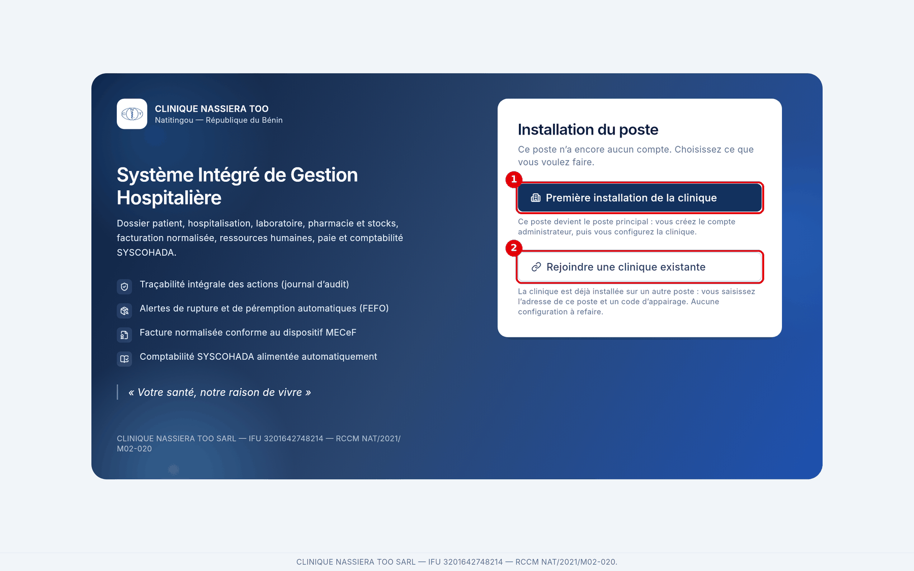
L’écran Installation du poste (capture Flutter). (1) Première installation de la clinique, (2) Rejoindre une clinique existante.
1.5 Créer le premier administrateur et noter le code de secours
1. Créer l’administrateur
Cliquez sur Première installation de la clinique.
Dans l’écran Créer l’administrateur, remplissez Nom complet (au format NOM Prénom).
Saisissez l’Identifiant : trois caractères au moins, en minuscules, chiffres, point, tiret ou tiret bas (par exemple prenom.nom).
Choisissez un Mot de passe (8 caractères au moins) et recopiez-le dans Confirmer le mot de passe.
Cliquez sur Créer le compte.
ℹ️
Information
Vous choisissez vous-même votre mot de passe. Il n’est écrit nulle part : le poste n’en garde qu’une empreinte.
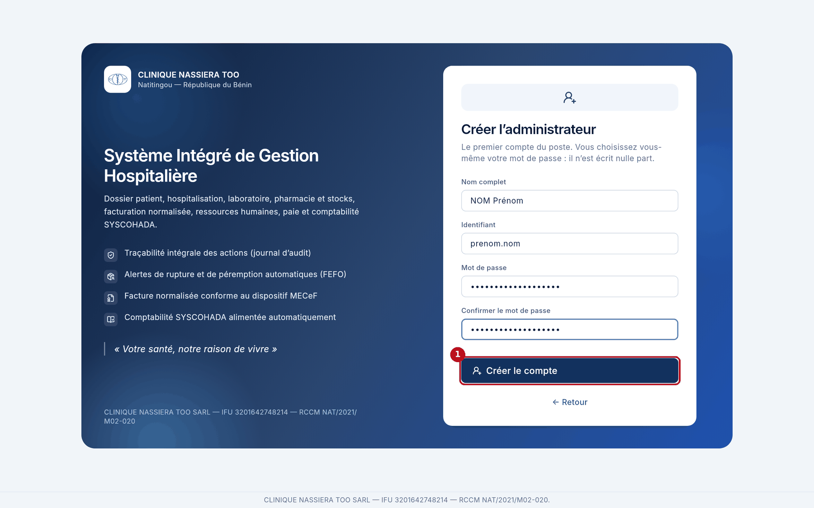
Créer l’administrateur (capture Flutter). (1) Créer le compte.
2. Ranger le code de secours
L’écran Votre code de secours s’affiche. Ce code de 25 caractères (format XXXXX-XXXXX-XXXXX-XXXXX-XXXXX) permet de retrouver l’accès administrateur si vous perdez votre mot de passe.
Cliquez sur Imprimer. La feuille porte le titre Code de secours de l’administrateur et la mention Document confidentiel à ranger au coffre.
Rangez la feuille au coffre de la Direction.
Cochez J’ai rangé ce code en lieu sûr.
Cliquez sur Ouvrir le tableau de bord.
🛑
Alerte
Le code de secours ne s’affiche qu’une fois. Sans lui et sans mot de passe, plus personne ne peut administrer le poste. Ne l’envoyez jamais par messagerie et ne le photographiez pas.
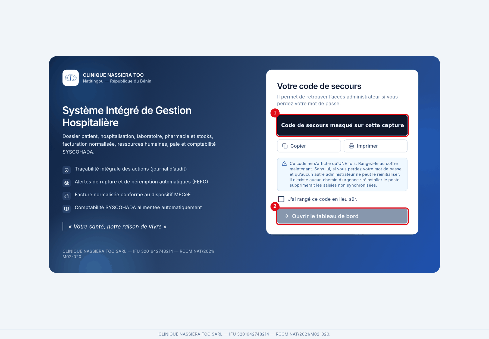
Le code de secours (capture Flutter). (1) Le code lui-même, masqué sur cette capture : il ne s’affiche qu’une fois. (2) Ouvrir le tableau de bord, qui reste inactif tant que la case J’ai rangé ce code en lieu sûr. n’est pas cochée.
3. Mot de passe administrateur perdu
Sur l’écran de connexion, ouvrez Mot de passe administrateur perdu.
Saisissez votre Identifiant, le Code de secours de 25 caractères, puis un Nouveau mot de passe et sa confirmation.
Cliquez sur Remplacer le mot de passe.
L’écran Mot de passe remplacé affiche un nouveau code de secours : l’ancien est consommé. Imprimez le nouveau et rangez-le au coffre.
Cliquez sur Retour à la connexion.
1.6 Les configurations à faire avant l’utilisation
Après la création du premier compte, la fenêtre Configurations à faire avant l’utilisation s’ouvre. Faites ces étapes dans l’ordre : ce qui est réglé sur la mère est repris par les autres postes et les mobiles. Chaque étape porte un état : À faire, Reportée ou Faite.
Étape
Ce que vous faites
Voir
1. Activer la mère
Relais web, secret de la mère et clé de clinique. Une seule mère par clinique. Si le relais est injoignable, vous pouvez reporter : rien n’est diffusé tant que la mère n’est pas activée.
Section 2.1
2. Configurer la clinique
Huit écrans à ouvrir et à vérifier : Papier à en-tête officiel, Paramètres fiscaux (IFU / RCCM), Activité des modules, Tarifs et prix, Natures de facture, Paramètres comptables & obligations, Configuration fiscale (MECeF), Rôles & permissions.
Chapitres 3, 4 et 6
3. Créer les comptes des agents
Un compte par agent, avec son rôle.
Section 3.2
4. Appairer les postes et les mobiles
Depuis la mère, un code par appareil.
Sections 2.4 et 2.5
Deux configurations ne sont pas dans l’assistant et se font ensuite : la passerelle SMS (section 4.5) et la satisfaction en ligne (section 4.6). Toutes deux sont désactivées par défaut.
Quand les quatre étapes sont faites, cliquez sur Clore l’assistant. Le message L’assistant d’installation est clos. confirme la fin.
⚠️
Attention : un second administrateur est obligatoire
Le poste refuse de clore l’assistant tant qu’il n’y a qu’un seul administrateur actif. Créez un second compte administrateur à l’écran Utilisateurs et définissez-lui un mot de passe. Ainsi, la clinique n’est jamais bloquée par l’absence d’une seule personne.
🔍
Où regarder
La même progression se lit sur la mère à l’écran Poste mère ➔ Cycle de vie ➔ Assistant de première mise en service (figure ci-dessous). Chaque étape se reprend avec Ouvrir.
L’assistant de première mise en service sur la mère : étapes faites, en cours et à faire.
1.7 Rejoindre une clinique existante (poste fileul)
Préparez d’abord un code d’appairage sur la mère (section 2.4). Le code a 8 caractères, il ne sert qu’une fois et il expire au bout de 15 minutes.
Sur le nouvel ordinateur, à l’écran Installation du poste, cliquez sur Rejoindre une clinique existante.
Dans Adresse de la mère, saisissez l’adresse de la mère sur le réseau local, au format http://adresse:port (par exemple http://192.168.1.10:9000).
Dans Code d’appairage, saisissez les 8 caractères affichés par la console de la mère.
Cliquez sur Rejoindre.
L’écran Poste rattaché s’affiche : la mère diffuse sa configuration, cela prend quelques secondes. Attendez le message Réception de la configuration.
Cliquez sur Aller à la connexion. Les agents se connectent avec les comptes créés sur la mère.
ℹ️
Information
Un fileul ne refait aucune configuration : comptes, rôles, tarifs et identité viennent de la mère. Il reçoit la configuration et refuse de l’écrire, en le disant.
⚠️
Erreurs fréquentes
Adresse invalide : l’adresse doit commencer par http:// et finir par le port (:9000 par défaut).
Code expiré ou déjà utilisé : demandez un nouveau code sur la mère.
La mère est éteinte ou le pare-feu Windows de la mère bloque le port : le fileul ne la joint pas.
1.8 Désinstaller un poste
La désinstallation se lance depuis Paramètres Windows ➔ Applications ➔ SIGH-CNT Poste, ou depuis le raccourci de désinstallation du groupe SIGH-CNT.
Le programme ferme l’application en cours.
Il propose une sauvegarde : Voulez-vous faire une SAUVEGARDE de ce poste avant de continuer ? Répondez Oui. La copie part dans Documents\SIGH-CNT-Sauvegarde-AAAA-MM-JJ_HHMM et n’est jamais supprimée.
Il affiche un avertissement : désinstaller supprime aussi toutes les données du poste. Non est le choix par défaut et annule tout.
Répondez Oui seulement si vous voulez vraiment tout supprimer.
🛑
Alerte : perte définitive
Les saisies qui n’ont pas encore été synchronisées sont perdues, définitivement. Sur la mère, la base est la copie de référence de la clinique : les fileuls ne la reconstituent pas entièrement. Ne désinstallez jamais la mère sans une sauvegarde vérifiée (chapitre 5). Pour remplacer la mère par une autre machine, utilisez la restauration (section 5.5), jamais une copie de fichiers.
ℹ️
Mode silencieux
Lancé en mode silencieux (/SILENT ou /VERYSILENT), le désinstallateur ne pose aucune question et garde les données.
2. Postes et synchronisation
2.1 Activer le mode mère
La mère est le même logiciel qu’un fileul, avec ses modules complémentaires (synchronisation, supervision, sauvegardes). Elle s’active sur un seul ordinateur, le serveur local de la clinique.
1. Préparer les trois informations
L’adresse du relais web : sighcnt.nassieratoo.com. Tapez le nom seul, sans https:// : le poste l’ajoute.
Le secret de la mère : le même texte que RELAIS_SECRET_MERE dans le fichier .env du relais (section 7.3). Long et aléatoire, 32 caractères au moins.
La clé de clinique : 16 caractères au moins. Elle chiffre tout ce qui quitte la clinique.
🛑
Alerte : la clé de clinique
La clé de clinique n’est jamais envoyée au relais. Sans elle, rien de ce qui a quitté la clinique (journal chiffré, sauvegardes hors site) ne peut être restauré. Écrivez-la sur papier, mettez-la sous scellé, et confiez-la à un détenteur nommé par la Direction (section 2.6).
2. Activer
Ouvrez Système ➔ Configuration Clinique ➔ Ce poste (mode fileul / mère) (figure 1). Pendant l’installation, vous pouvez aussi cliquer sur Activer maintenant dans la fenêtre des configurations.
Cliquez sur Activer le mode mère (figure 2).
Remplissez Adresse du relais web, Secret de la mère, Clé de clinique (16 caractères au moins).
Remplissez si vous le voulez Nom de ce poste (facultatif), par exemple « Poste principal, bureau de la Direction ». C’est le nom que le panneau du relais affichera.
Cliquez sur Activer. Le mode du poste passe à Mère et le service de synchronisation à En marche (figure 3).
Le ruban : Système ouvre ses rangées. L’entrée Ce poste (mode fileul / mère) est réservée à l’administrateur et à la DAF.
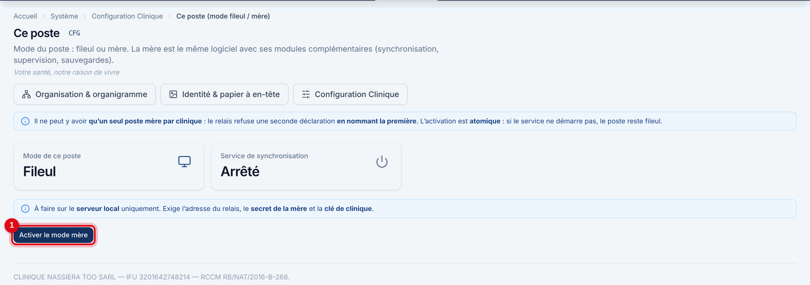
L’écran Ce poste d’un fileul : bouton Activer le mode mère.Après l’activation : mode Mère, service En marche, groupe Poste mère ouvert dans le ruban.
⚠️
Une seule mère par clinique
L’activation exige de joindre le relais. Si une autre mère est déjà déclarée, le relais refuse en la nommant : « Une mère est déjà active : … Il ne peut y avoir qu’un seul poste mère par clinique. » Une mère qui a donné signe de vie depuis moins de 5 minutes ne peut pas être remplacée : arrêtez-la d’abord. L’activation est atomique : si le service ne démarre pas, le poste reste fileul.
⚠️
Messages d’erreur à l’activation
Le relais n’a pas répondu : vérifiez Internet et l’adresse. Vous pouvez cliquer sur Reporter l’activation et revenir plus tard.
Le secret de la mère est refusé par le relais : le texte saisi diffère de RELAIS_SECRET_MERE.
Adresse du relais invalide (ex. sighcnt.nassieratoo.com) : corrigez la saisie.
⚙️
Paramétrage : le réseau local
La mère écoute par défaut sur le port 9000. Autorisez ce port dans le pare-feu Windows de la mère pour le réseau privé de la clinique, et donnez à la mère une adresse fixe sur le routeur. Les fileuls la joignent à http://<adresse de la mère>:9000.
2.2 La console de la mère
Une fois la mère active, le ruban affiche le groupe Poste mère. Il est réservé à l’administrateur et à la DAF. Il a cinq rangées :
Rangée
Écrans
Exploitation de la synchronisation
Supervision, Appareils et appairage, Conflits et doublons, « À traiter » consolidé, Journal des opérations, Plages de numéros et baux de stock, Lots de tournée (mobiles)
Sécurité et continuité
Journal technique, Sauvegardes et restauration, Clé de clinique, Intégrité et altérations, Réinitialisation de production
Liaison avec le relais
Relais en ligne, Indicateurs publiés
Plateforme locale
Service et démarrage, Base de données locale, Réseau local, Planificateur, Notifications serveur
Cycle de vie
Assistant de première mise en service, Mises à jour et compatibilité, Import de migration
2.3 Superviser la mère
Ouvrez Poste mère ➔ Exploitation de la synchronisation ➔ Supervision. L’écran donne la santé de la mère d’un coup d’œil : base, disque, sauvegarde, relais, postes, horloges, intégrité.
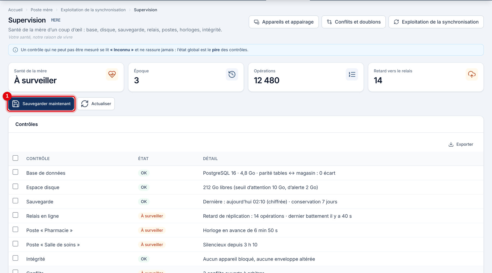
La supervision : santé globale, époque, opérations, retard vers le relais, puis un contrôle par ligne. Le bouton Sauvegarder maintenant (1) lance une sauvegarde chiffrée.
Un contrôle qui ne peut pas être mesuré est affiché Inconnu. Il ne rassure jamais : l’état global est le pire des contrôles.
Un poste dont l’horloge dérive de plus de 2 minutes est signalé Horloge à vérifier. Remettez l’heure de cet ordinateur à jour.
Un poste silencieux depuis longtemps est signalé À surveiller.
🔍
Où regarder
Le retard de réplication vers le relais se lit aussi à Poste mère ➔ Liaison avec le relais ➔ Relais en ligne (section 2.7). Les conflits à trancher sont à Conflits et doublons.
2.4 Appairer un poste fileul
Sur la mère, ouvrez Poste mère ➔ Exploitation de la synchronisation ➔ Appareils et appairage.
Cliquez sur Appairer un poste (figure, cadre 1).
Saisissez le Nom de l’appareil (par exemple « Caisse principale », « Laboratoire »).
Cliquez sur Générer le code. Le Code d’appairage s’affiche : À usage unique, valable 15 minutes.
Sur le nouveau poste, faites Rejoindre une clinique existante avec ce code (section 1.7).
Vérifiez que le poste apparaît dans la liste avec l’état Actif.
Appareils et appairage : (1) Appairer un poste, (2) Appairer un mobile, (3) Révoquer un appareil.
Pour chaque appareil, la liste donne son type, sa fonction, l’agent, le dernier contact, le retard (opérations en attente), l’horloge, la version et l’état.
2.5 Appairer un téléphone
Un téléphone ne parle jamais au réseau local : il passe par le relais web. La mère doit donc être active et reliée au relais.
Sur la mère, à Appareils et appairage, cliquez sur Appairer un mobile.
Choisissez le Profil du téléphone : Soignant ou Réception de secours.
Pour un soignant, choisissez la Fonction du soignant (médecin, sage-femme, infirmier, aide-soignant). La fonction est fixée par ce code : le téléphone ne peut ni la choisir ni la changer.
Cliquez sur Générer le code.
Sur le téléphone, saisissez le code d’appairage et la clé de la clinique (ou faites lire le QR d’appairage affiché par la mère, section 2.6).
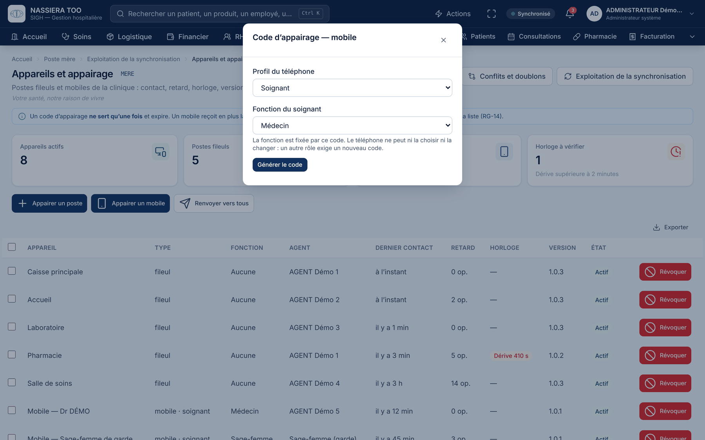
La fenêtre Code d’appairage, mobile : profil et fonction fixés par le code.
🛑
Alerte
Ne transmettez jamais la clé de la clinique par messagerie, SMS ou courriel. Saisissez-la vous-même sur le téléphone, ou faites lire le QR sur place.
⚠️
Changer la fonction d’un téléphone
Un appareil déjà appairé ne reprend pas un autre code. Pour changer sa fonction, révoquez-le, puis appairez-le de nouveau avec un nouveau code.
Révoquer un appareil
À Appareils et appairage, cliquez sur Révoquer sur la ligne de l’appareil.
Confirmez. L’appareil ne pourra plus synchroniser.
Un poste révoqué garde ses données locales et se met en état suspendu à son retour. Un téléphone révoqué est effacé à son prochain contact. La fiche de l’appareil reste dans la liste (RG-14).
2.6 La clé de clinique
Ouvrez Poste mère ➔ Sécurité et continuité ➔ Clé de clinique.
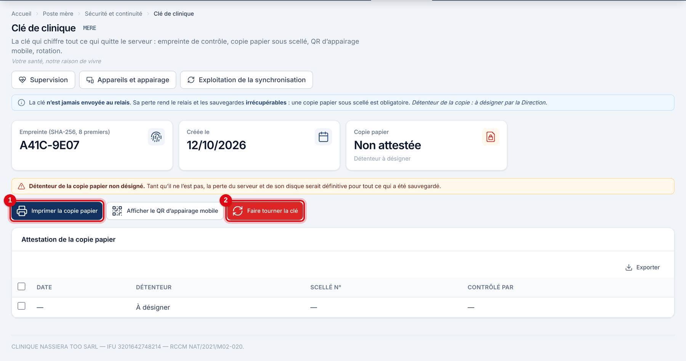
La clé de clinique : empreinte de contrôle, date de création, copie papier. (1) Imprimer la copie papier, (2) Faire tourner la clé.
Cliquez sur Imprimer la copie papier (1).
Mettez la feuille sous scellé et notez le numéro du scellé.
Enregistrez l’attestation : date, détenteur, numéro de scellé, personne qui a contrôlé. Tant que le détenteur n’est pas désigné, l’écran affiche Détenteur de la copie papier non désigné.
⚙️
À quoi sert encore la clé de clinique
Elle chiffre le journal et les sauvegardes qui quittent la clinique (chapitre 5).
Elle calcule l’identifiant opaque de chaque SMS (une empreinte HMAC) : le relais ne peut pas relier un message à une personne (section 4.5).
Elle dérive la paire de clés de la satisfaction en ligne : seule la clé publique va au relais, la mère ouvre les réponses (section 4.6).
Aucun secret de plus à sauvegarder : la perte de la clé de clinique reste le seul scénario à prévenir.
ℹ️
Information
Le bouton Afficher le QR d’appairage mobile sert à appairer un téléphone sur place sans recopier la clé. Le bouton Faire tourner la clé (2) remplace la clé : faites-le seulement en cas de soupçon de fuite, et imprimez aussitôt la nouvelle copie papier.
2.7 La liaison avec le relais
Ouvrez Poste mère ➔ Liaison avec le relais ➔ Relais en ligne.
Relais en ligne : état de la liaison, dernier battement, retard de réplication, enveloppes au relais. (1) Tester la liaison, (2) Faire tourner le secret de la mère.
La mère interroge le relais toutes les 10 à 15 secondes. Le relais n’appelle jamais la mère : elle est derrière le routeur de la clinique.
Si Internet est coupé, les fileuls continuent de se synchroniser avec la mère. Le retard vers le relais monte et se voit. Au retour d’Internet, la mère rattrape seule.
Si la mère se tait plus de 5 minutes, le relais lève une alerte « battement ».
La mère fait aussi, chaque minute, le travail des deux services publics du relais : elle calcule et dépose les SMS à envoyer (section 4.5), elle publie les liens de satisfaction et relève les réponses chiffrées (section 4.6).
⚙️
Faire tourner le secret de la mère
Changez d’abord RELAIS_SECRET_MERE dans le .env du relais (section 7.3), puis saisissez le même texte sur la mère avec Faire tourner le secret de la mère. Entre les deux gestes, la mère ne peut plus déposer.
2.8 Le mode pair (échanges entre postes par le relais)
Le mode pair permet à des postes de s’échanger leurs opérations par le relais, sans passer par la mère (utile si la mère est éteinte). Ouvrez Système ➔ Configuration Clinique ➔ Échanges entre postes (mode pair).
Remplissez Adresse du relais, Nom de ce poste et Code d’appairage (usage unique).
Cochez Activer le mode pair sur ce poste.
Cliquez sur Enregistrer la configuration (1).
Sur le premier poste seulement, cliquez sur Générer la clé (2). Notez la clé : elle ne sera plus affichée. Tous les postes doivent porter la même clé.
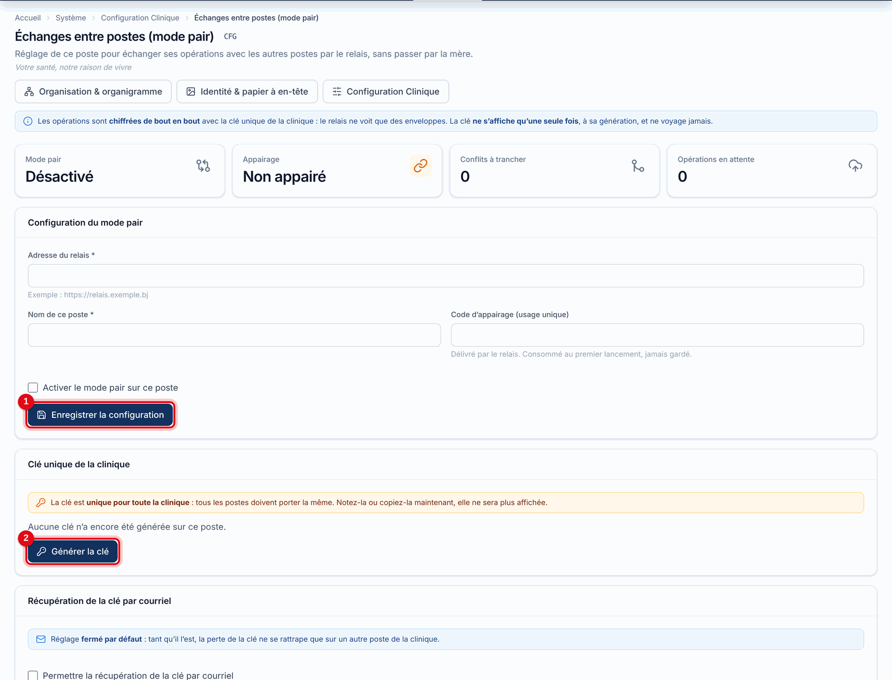
Le mode pair : configuration, clé unique de la clinique, récupération de la clé par courriel.
ℹ️
Information
Le réglage prend effet au prochain lancement du poste. Les opérations sont chiffrées de bout en bout : le relais ne voit que des enveloppes.
2.9 Ce qui se passe pendant une coupure
Situation
Ce qui continue
Ce qui attend
Un fileul ne joint plus la mère
Saisie, caisse, impression, sortie de stock dans la part du poste, numérotation dans sa plage. La pastille dit Hors ligne depuis N min.
Les validations faites par un autre poste, la configuration de la mère.
La mère n’a plus Internet
Toute la clinique, sur le réseau local.
Les téléphones, la copie au relais. La mère rattrape seule au retour.
Retour de la liaison
Tout remonte une seule fois. Deux postes qui ont modifié le même champ sont marqués en conflit à la mère, jamais écrasés en silence. Un stock devenu négatif hors ligne est détecté et marqué (RG-03).
ℹ️
Information
Le détail, avec la preuve de chaque affirmation, est dans le guide docs/guides/PANNE-DE-CONNEXION.md.
3. Utilisateurs et droits
3.1 Comprendre les droits : rôle, fonction, secteur, gestes réservés
Les droits de SIGH-CNT ont trois axes, plus les gestes réservés :
Axe
Ce qu’il décide
Où il se règle
Rôle
Les écrans ouverts (voir, éditer, annuler, lecture seule).
Sur le compte de l’agent ; la fiche du rôle à Rôles & permissions (RBAC).
Fonction
Les données : qui prescrit, qui exécute les soins, quels résultats il voit.
Onglet Habilitations métier.
Secteur
Le périmètre : « son secteur » ou « tous ».
Onglet Habilitations métier et fiche des soignants (Prescripteurs & exécutants de soins).
Geste réservé
Un acte qui engage un professionnel nommé (valider un seuil du laboratoire, décider un prix, régler la clôture, valider une commande de stock gros, exporter un tableau…). Il ne se déduit d’aucun droit d’écran. Il y en a , tous listés au chapitre 8.
Bouton Régler les gestes réservés de ce rôle de la fiche du rôle.
ℹ️
RG-13, le cloisonnement
Le médical est réservé au soignant habilité ; le financier et les RH aux profils comptables et RH. Fermer un module le retire du ruban et de la recherche globale : l’écran devient inatteignable, pas seulement invisible. Le moteur refuse aussi l’écriture : masquer un bouton ne protège rien, le logiciel contrôle chaque geste.
3.2 Créer un compte utilisateur
Ouvrez Système ➔ Sécurité & Utilisateurs ➔ Utilisateurs.
Cliquez sur Nouveau (figure, cadre 1).
Dans la fenêtre Nouveau compte, saisissez l’Identifiant de connexion (format usuel : initiale du prénom, point, nom).
Choisissez l’Agent rattaché (sa fiche du personnel) et le Service.
Choisissez le Rôle (RBAC).
Laissez cochés Compte actif et Changement obligatoire à la première connexion. Cochez Authentification à deux facteurs pour un profil à privilèges élevés.
Saisissez un Mot de passe provisoire (huit caractères au moins) et sa confirmation.
Cliquez sur Créer.
Remettez le mot de passe provisoire à l’agent en main propre. Il devra le changer à sa première connexion.
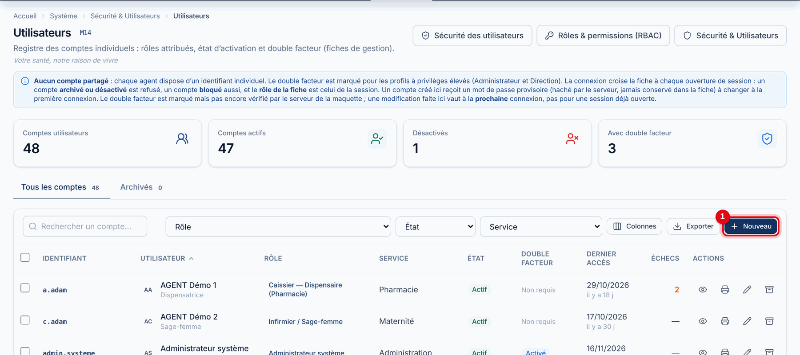
La liste des comptes. (1) Nouveau.
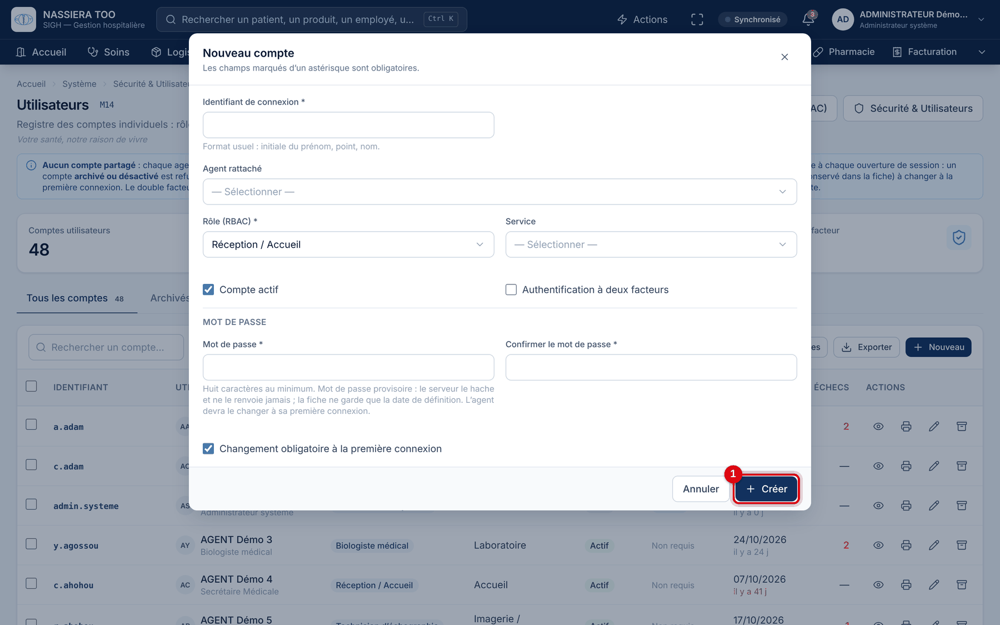
La fenêtre Nouveau compte. (1) Créer.
⚠️
Aucun compte partagé
Chaque agent a son identifiant individuel. Un compte partagé rend la journalisation inutile (RG-12). Un compte archivé ou désactivé est refusé à la connexion.
ℹ️
Un agent quitte la clinique
Ne supprimez pas son compte : archivez-le (bouton d’archivage de la ligne). Il ne peut plus se connecter, et son historique reste lisible.
🔍
Où regarder
Sécurité des utilisateurs (réservé à l’administrateur) : échecs de connexion, comptes bloqués, double facteur. Sessions actives : qui est connecté et depuis quel poste. Journal d’audit : qui a fait quoi, avec l’ancienne et la nouvelle valeur.
Rôles & permissions : (1) Matrice des droits, (2) Détail par rôle, (3) Habilitations métier.
1. Modifier les droits d’un rôle par module
Ouvrez l’onglet Détail par rôle.
Sur la carte du rôle, cliquez sur Droits.
Dans la fenêtre Droits du rôle « … », cochez pour chaque module Voir, Éditer, Annuler ou Lecture seule. Les boutons Tout ouvrir, Tout en lecture seule et Tout fermer agissent sur toutes les lignes.
Cliquez sur Enregistrer les droits.
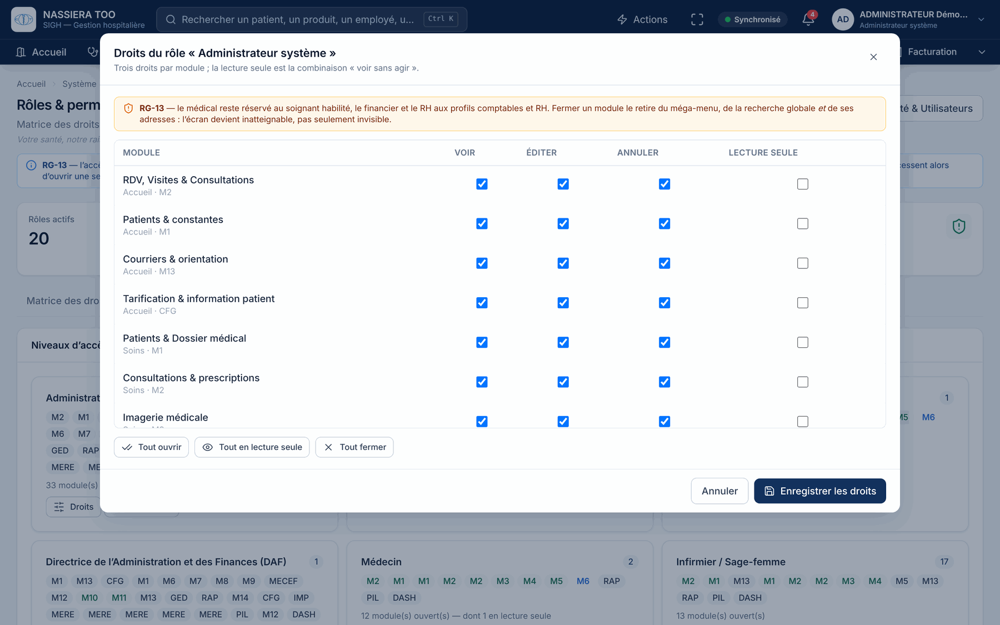
La fenêtre des droits d’un rôle : trois droits par module ; la lecture seule est la combinaison « voir sans agir ».
2. Régler les gestes réservés d’un rôle
Ouvrez l’onglet Matrice des droits.
Sur la ligne du rôle, cliquez sur l’icône Régler les gestes réservés de ce rôle (tampon).
Cochez ou décochez chaque geste dans la colonne Accordé. La colonne Origine rappelle le réglage d’origine.
Cliquez sur Enregistrer. Le bouton Retirer les réglages rend à chaque geste son réglage d’origine.
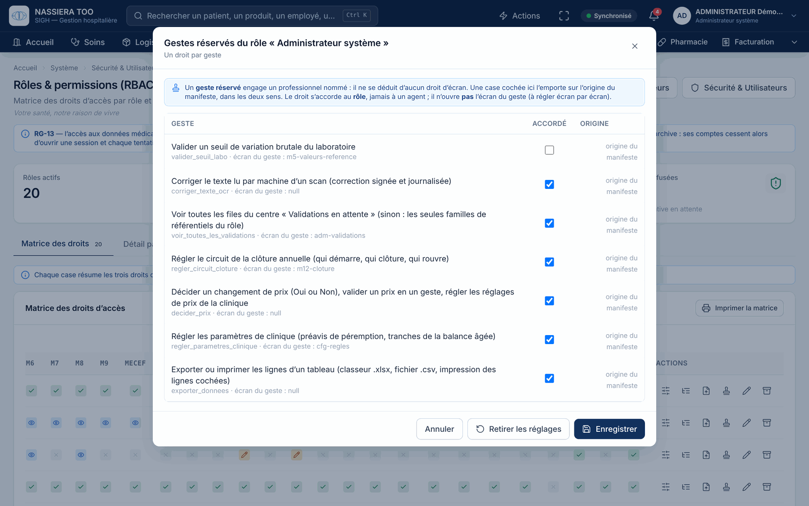
Les gestes réservés d’un rôle : un droit par geste.
Les autres icônes de la ligne d’un rôle : Modifier les droits de ce rôle, Régler écran par écran, Régler les importations de ce rôle, Renommer ce rôle, Archiver ce rôle.
⚠️
Attention : modifier un rôle
Un changement de rôle s’applique à tous les comptes de ce rôle, sur tous les postes, après synchronisation. Une surcharge accorde autant qu’elle restreint. Un rôle archivé ferme les comptes qui le portent. Prévenez les agents concernés avant d’enregistrer.
ℹ️
Les gestes réservés semés
Le chapitre 8 donne la liste complète des gestes réservés, avec leur défaut semé, depuis le fichier des droits du dépôt. Retenez trois règles :
Un rôle créé en exploitation part de zéro : aucun geste réservé n’est ouvert tant que vous ne le cochez pas.
Un geste réservé n’ouvre aucun écran (sauf mention contraire) : un rôle qui doit valider une commande de stock gros doit aussi lire l’écran Bons de commande.
Le moteur refuse aussi : sans le droit, la commande est absente de l’écran et le refus cite le droit.
Un cas particulier : le Surveillant et la fiche de son équipe
Le geste ouvrir_fiche_personnel_equipe (défaut : le Surveillant) ouvre l’écran Fiche de mon équipe en lecture restreinte : identité, fonction, service, planning. Jamais le salaire, la catégorie, la date d’embauche, le numéro CNSS, l’assurance ni la paie (RG-13). Le moteur refuse un agent hors de l’équipe. Pour qu’un autre rôle y accède, accordez-lui ce geste ; pour le retirer au Surveillant, décochez-le.
Séparer la pharmacie et la caisse
Aujourd’hui un seul rôle (Caissier, Dispensaire) tient la caisse et la pharmacie. Le rôle Pharmacien est archivé : la pharmacie n’a donc pas de poste propre. Pour les séparer sans toucher au code :
Rouvrez le rôle Pharmacien (corbeille des rôles).
Accordez-lui le seul geste poste_pharmacie et retirez-le du Caissier.
Le Caissier garde poste_caisse : il reçoit la tâche « Encaisser la prescription ». Le Pharmacien reçoit la tâche « Délivrer les médicaments ».
⚠️
À vérifier avant de séparer
Donnez à chaque rôle les écrans dont il a besoin : les gestes ne les ouvrent pas. Vérifiez qu’au moins un agent actif tient chacun des deux postes, sinon la tâche n’a pas de destinataire.
3.4 Fonction et secteur
L’onglet Habilitations métier donne, pour chaque fonction, ce qu’elle voit des données (résultats d’analyses, échographies : Toutes, Son secteur, Aucune), si elle Peut prescrire et si elle Exécute les soins. Le rôle ouvre les écrans, la fonction décide des données, le secteur en fixe le périmètre.
Les six secteurs sont : Laboratoire, Pharmacie, Consultation, Imagerie médicale, Maternité, Hospitalisation et soins, plus la Direction transverse. Le secteur d’exercice d’un soignant se règle à Prescripteurs & exécutants de soins (champ Secteurs d’exercice).
4. Paramètres de la clinique
4.1 Où se règlent les paramètres, et comment ils voyagent
Les paramètres de la clinique (taux, dates, seuils, circuits, modes) sont enregistrés en base avec une valeur par défaut. Ils se versionnent par date : une nouvelle valeur s’applique à partir de sa date d’effet, et l’ancienne reste lisible.
Ils se règlent sur la mère, par un rôle qui porte le droit. Un fileul les reçoit et refuse de les écrire, en le disant.
Ils ne partent jamais vers un téléphone.
Ils se déposent au relais web, chiffrés : le relais ne les lit pas.
⚙️
Paramétrage : régler un paramètre de clinique
Ouvrez Système ➔ Configuration Clinique ➔ Règles métier versionnées.
Dans Paramètres de clinique (datés), cliquez sur Régler sur la ligne voulue (par exemple Préavis de péremption des lots (jours)).
Saisissez la valeur dans les bornes affichées, la date d’effet et le motif, puis enregistrez.
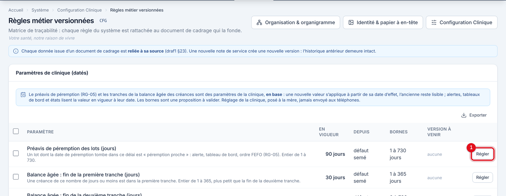
Les paramètres de clinique datés : valeur en vigueur, depuis quand, bornes, version à venir. (1) Régler.
ℹ️
Ce qui voyage d’un poste à l’autre : l’identité et les informations de la clinique
La Direction a décidé le 16/11/2026 qu’une mise à jour des informations de la clinique se propage à tous les postes. C’est fait :
L’identité (légale et visible) et les options d’impression (logo de part et d’autre, filigrane) sont de la configuration de la mère : elles voyagent aux fileuls.
Un profil habilité à écrire Paramètres fiscaux ou Identité & papier à en-tête (un droit de la fiche, jamais un nom de rôle) peut poser l’identité sur n’importe quel poste. Sur un fileul, la modification est signée et déposée à la mère (« Modification déposée à la mère ») ; la mère la revérifie sous le rôle de l’auteur et la propage. Le fileul ne la voit qu’une fois appliquée.
Rien de tout cela ne part vers un téléphone.
Les autres réglages locaux (canaux et paramètres de notification) ne voyagent pas encore entre postes : réglez-les sur chaque poste.
4.2 Identité imprimée et papier à en-tête
L’identité de la clinique alimente automatiquement tous les états imprimables : facture, ordonnance, bulletin de paie, bon de sortie, état comptable. Aucune mention légale ne se saisit document par document.
1. Régler l’identité visible
Ouvrez Système ➔ Configuration Clinique ➔ Identité & papier à en-tête.
Vérifiez Dénomination sociale, Sigle, Devise ou slogan, Adresse géographique, Pays, Adresse électronique, Téléphones (séparés par « / »), Ligne rendez-vous.
Déposez le logo, le cachet et la signature numérisée dans Ressources graphiques avec Déposer une ressource.
Réglez les options d’impression : Logo de part et d’autre de la dénomination et Filigrane par défaut (aucun, Document officiel ou Confidentiel).
Cliquez sur Enregistrer (1), puis sur Prévisualiser un état (2) pour contrôler le rendu.
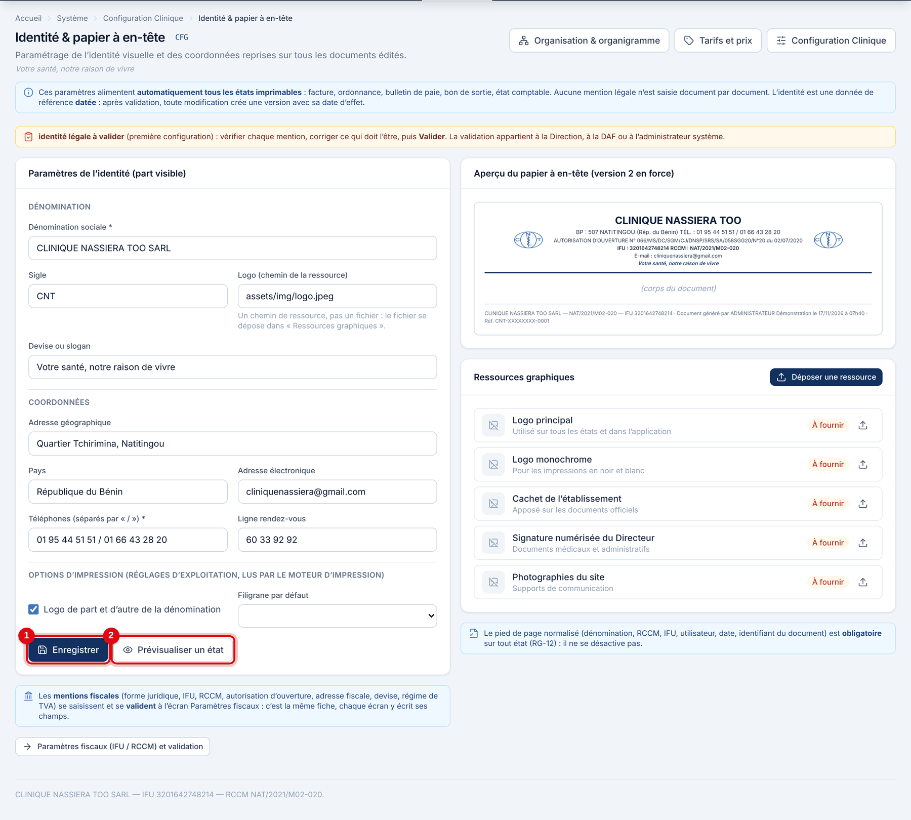
Identité & papier à en-tête : paramètres, aperçu du papier à en-tête, ressources graphiques.
2. Régler l’identité légale (IFU, RCCM)
Le droit de poser l’identité est le droit d’écriture de l’écran Paramètres fiscaux ou de l’écran Identité & papier à en-tête, à régler par la fiche du rôle (chapitre 3). Le geste valider_configuration_fiscale (Direction, DAF, administrateur) valide ensuite l’identité légale.
À la première configuration, cliquez sur Valider l’identité légale (2). La validation appartient à la Direction, à la DAF ou à l’administrateur système.
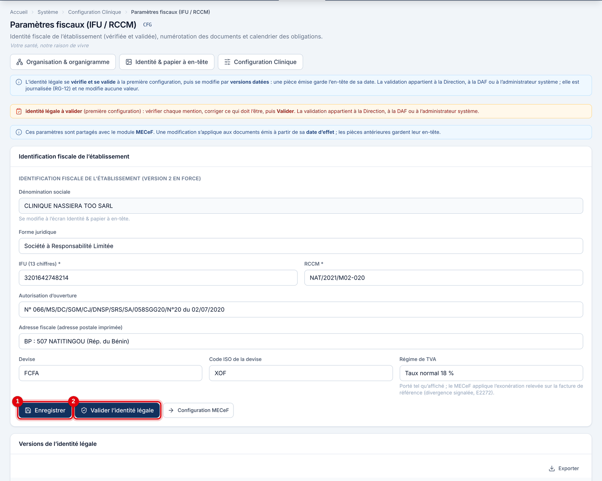
Paramètres fiscaux : identification fiscale, versions de l’identité légale, numérotation des documents.
🛑
Une pièce émise ne se réécrit jamais
Modifier l’identité crée une nouvelle version datée. Une facture déjà émise garde l’en-tête de sa date. Choisissez la date d’effet avec soin.
ℹ️
Le numéro RCCM à jour est en place
La Direction a indiqué le 16/11/2026 que le numéro à jour est NAT/2021/M02-020. Il est posé comme version 2 de l’identité légale, avec effet le 16/11/2026 (date d’effet à confirmer par la Direction). L’ancien numéro RB/NAT/2016-B-268 est la version 1, close au 15/11/2026 : une pièce émise avant le 16/11/2026 garde l’ancien numéro, une pièce émise ensuite imprime le nouveau (voyez le tableau Versions de l’identité légale de la figure ci-dessus).
Si le numéro était en usage plus tôt, la Direction pose une version datée antérieure : aucune pièce déjà émise n’est réécrite.
3. Poste déjà installé : la migration est automatique
Un poste installé avant cette mise à jour n’a que la version 1. Au démarrage, il reçoit la version 2 et sa version 1 est close au 15/11/2026, sans être réécrite. L’opération est signée (« Migration automatique de l’identité »), journalisée (RG-12) et sans effet si elle a déjà eu lieu. La version 2 n’est pas validée : la Direction la valide (étape 4 ci-dessus).
Un fileul rattaché ne migre pas : l’identité est de la configuration de la mère, qui la propage.
La migration ne remplace jamais une identité modifiée à la main : si la version 1 a été changée, ou close à une autre date, ou existe en double, le poste refuse en nommant la cause (IDENTITE_MODIFIEE, IDENTITE_FIN_DIFFERENTE, IDENTITE_VERSION_1_EN_DOUBLE, IDENTITE_VERSION_1_ABSENTE, IDENTITE_ID_PRIS), journalise une fois et n’écrit rien. Corrigez alors l’identité à la main (étapes 1 et 2).
🔍
Où vérifier après la mise à jour
Sur chaque poste : Système ➔ Configuration Clinique ➔ Paramètres fiscaux (IFU / RCCM), tableau Versions de l’identité légale : la version 2 doit être « en force ». Le pied d’écran et l’aperçu du papier à en-tête portent le même numéro.
ℹ️
Trois gabarits d’impression
A4 (documents), rouleau 80 mm (caisse) et carte CR80 (badge, sans IFU ni RCCM). Tous reprennent l’en-tête officiel et un pied normalisé : pagination, date, utilisateur, identifiant.
4.3 Importer des données de départ
Ouvrez Système ➔ Importation de données ➔ Jeux d’import et historique des lots. Chaque jeu (patients, personnel, tarifs, fournisseurs, plan comptable, stock détail initial…) a sa page.
Les jeux d’import. (1) Historique des lots, (2) Tailles maximales.
Ouvrez la page du jeu, par exemple Importation du répertoire patients.
Dans 1. Télécharger le modèle, cliquez sur Télécharger le modèle (.xlsx). Le classeur a trois feuilles : « Données », « Instructions », « Listes ».
Remplissez la feuille « Données » en respectant les colonnes obligatoires et les valeurs permises.
Téléversez le fichier. Le logiciel l’analyse en entier avant d’écrire quoi que ce soit.
Lisez le rapport. Un refus se nomme : ligne, colonne, valeur, motif, geste de correction. Corrigez et recommencez.
Validez l’import. Le lot apparaît dans Historique des lots.
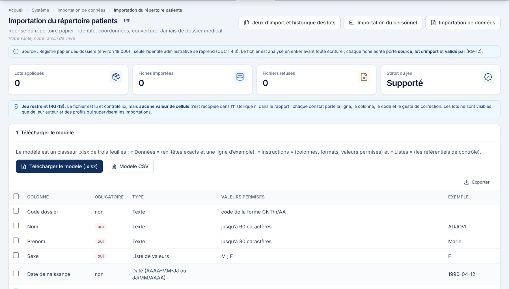
La page d’un jeu : modèle, colonnes, types, valeurs permises, exemple.
ℹ️
Information
Un import n’invente rien. Un lot s’annule en l’archivant (RG-14).
Le même fichier importé deux fois est reconnu comme le même lot : la mère le confirme une fois.
Le répertoire patients ne reprend que l’identité administrative, jamais le dossier médical. Le code patient (RG-01, format CNT/[n°]/[année]) est attribué par le logiciel.
Les jeux qui écrivent la configuration sont réservés à la mère.
⚙️
Paramétrage : qui peut importer
Le droit d’importer se règle par jeu et par rôle : icône Régler les importations de ce rôle à Rôles & permissions (RBAC).
4.4 Clôture d’exercice
Ouvrez Financier ➔ Comptabilité SYSCOHADA ➔ Exercices & clôtures. Un exercice a trois états : ouvert, en clôture (les modules n’écrivent plus), clôturé (lecture seule).
Exercices & clôtures. (1) onglet Circuit de clôture, (2) Pré-clôture.
1. Régler le circuit de clôture
Le circuit dit qui démarre la clôture, qui passe les écritures d’inventaire, qui clôture définitivement, qui rouvre, et le mois d’ouverture de l’exercice suivant. Il faut le geste réservé Régler le circuit de la clôture annuelle.
Ouvrez l’onglet Circuit de clôture.
Modifiez les rôles de chaque réglage.
Saisissez la Date d’effet et le Motif du changement (obligatoire).
Cliquez sur Enregistrer le circuit. Une nouvelle version datée est créée ; les anciennes restent à Historique des versions (jamais réécrites).
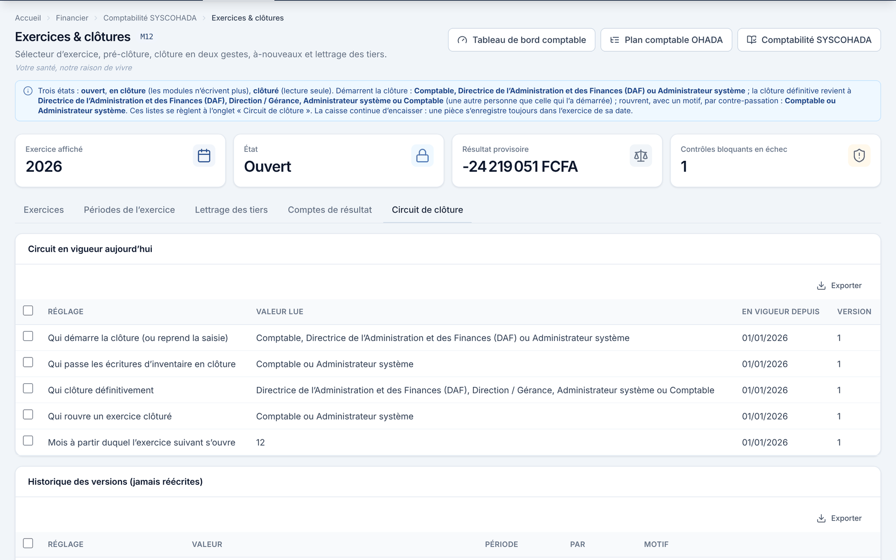
Le circuit en vigueur aujourd’hui et l’historique de ses versions.
2. Clôturer un exercice
Sur la ligne de l’exercice, cliquez sur Pré-clôture. Lisez les contrôles.
Cliquez sur Démarrer la clôture. Rien n’est figé : la saisie peut reprendre tant que la clôture définitive n’est pas faite.
Une autre personne que celle qui a démarré clique sur Clôturer définitivement, avec un motif. Le logiciel passe d’un seul tenant la pièce de clôture (journal CL), la pièce d’à-nouveaux (journal AN) de l’exercice suivant, le verrou et l’archive.
🛑
Alerte
Après la clôture définitive, l’exercice est en lecture seule. Une réouverture se fait avec Rouvrir, par un rôle autorisé, avec un motif, par contre-passation. Sur un fileul, une pièce datée d’un exercice clos est refusée par la mère au moment de la synchronisation.
ℹ️
Information
La caisse continue d’encaisser pendant la clôture : une pièce s’enregistre toujours dans l’exercice de sa date. Les soldes d’ouverture inconnus restent « inconnus », jamais zéro.
4.5 La passerelle SMS (rappels de rendez-vous, vœux)
La passerelle envoie des SMS automatiques : un rappel de rendez-vous aux patients, des vœux d’anniversaire aux patients et au personnel qui y consent. Le travail est partagé :
La mère calcule les envois (qui, quand, quel texte) et dépose au relais des messages déjà composés.
Le relais les garde planifiés et les envoie par une tâche cron chaque minute (relais:sms-envoyer, section 7.11), avec le fournisseur choisi : Twilio ou Vonage. Même si la mère est éteinte à l’heure d’envoi, le message part.
Les identifiants du fournisseur sont dans le fichier .env du relais, jamais sur le poste ni dans le dépôt. L’écran du poste affiche seulement « défini » ou « non défini ».
🛑
Une exception assumée à « le relais ne lit rien » (ADR-0008)
Pour envoyer un SMS, le fournisseur doit lire le numéro et le texte. Le relais voit donc, le temps de l’envoi seulement : le numéro, le texte final (320 caractères au plus), l’heure, le type de message et un identifiant opaque. Dès que le message est envoyé, refusé ou retiré, le numéro et le texte sont effacés ; il reste l’identifiant opaque, l’heure, le type, l’état, le code et les quatre derniers chiffres.
L’identifiant est une empreinte (HMAC) calculée à la mère avec la clé de clinique, que le relais ne détient pas : il ne peut pas le relier à une personne ni à un rendez-vous.
Le relais ne voit jamais : l’annuaire, une date de naissance, un code patient ou de dossier, un rendez-vous, le médecin, le service, le motif, une donnée de santé.
Entre le dépôt et l’envoi (au plus de la veille 18 h au lendemain pour un rappel), la base du relais contient des numéros et des textes. Un compte superadmin qui lit la base (pas le panneau, qui les masque) peut les lire : à reconnaître au registre des accès de la clinique.
1. Régler la passerelle sur la mère
Sur la mère, ouvrez Système ➔ Configuration Clinique ➔ Passerelle SMS.
Lisez la carte Passerelle : Non configurée tant que le relais n’a pas ses identifiants, Prête ensuite. L’état est lu au relais par la mère.
Vérifiez dans Réglages de la passerelle : fournisseur, plafond par jour, état « défini » ou « non défini » de chaque identifiant (lecture seule : ils se posent au relais), heures calmes, rappels.
Cochez Passerelle active (1), saisissez le motif demandé, puis cliquez sur Enregistrer la passerelle. Le réglage est daté et journalisé.
Dans Test d’envoi, saisissez votre numéro au format international (+229…) et cliquez sur Tester l’envoi (2). Le résultat est nommé : accepté par le fournisseur, ou le code du refus avec le geste de correction. Le numéro n’est pas conservé.
Calculer et déposer maintenant force un passage sans attendre la minute suivante.
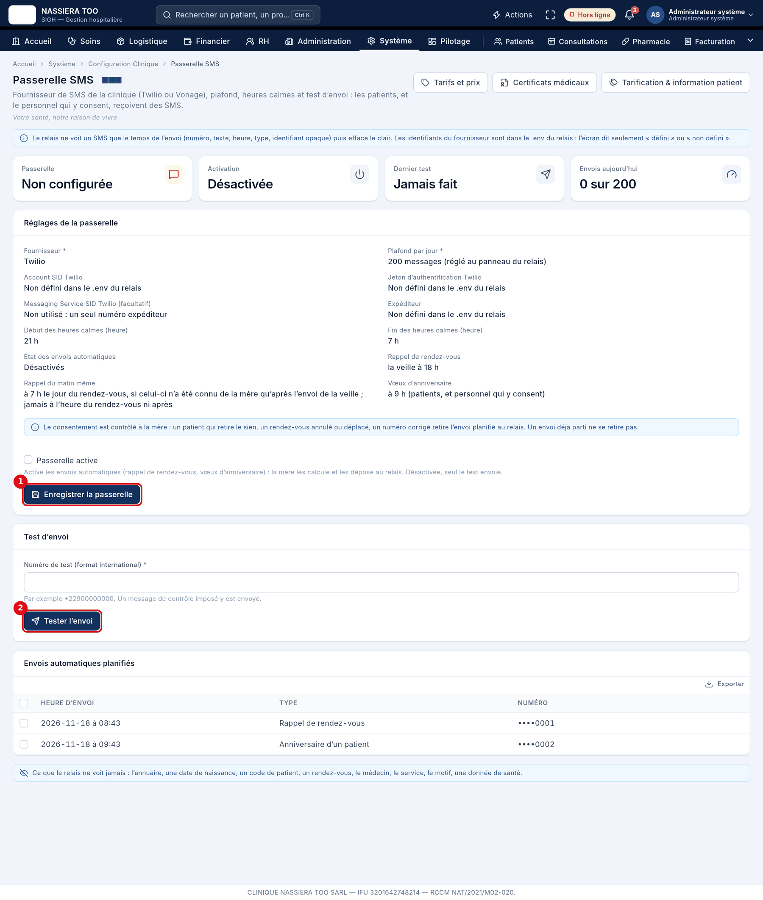
La passerelle SMS vue par la mère (capture Flutter) : état lu au relais, identifiants « non défini » (ils se posent dans le .env du relais), heures calmes, rappel du matin. (1) Enregistrer la passerelle, (2) Tester l’envoi.
ℹ️
La maquette montre cet écran autrement
La maquette de référence propose des champs pour saisir les identifiants du fournisseur. Le poste ne le fait pas : il les lit au relais. Suivez le poste. Seuls la mère, et un compte qui détient le geste réservé regler_passerelle_sms (administrateur et DAF d’origine), peuvent enregistrer, tester ou déposer. Sur un fileul, l’écran se lit sans aucune commande.
2. Ce que la mère envoie, et quand
Message
Quand
Qui le reçoit
Rappel de rendez-vous
La veille à 18 h (réglable).
Le patient du rendez-vous, s’il a donné son consentement.
Rappel du matin
Le matin du rendez-vous, à 7 h (réglable, à valider par la Direction), pour un rendez-vous pris après l’envoi de la veille. Jamais après l’heure du rendez-vous ; jamais en double du rappel de la veille.
Le patient, qui reçoit ici son prénom.
Vœux d’anniversaire
À 9 h (réglable).
Les patients (consentement coché par défaut) et le personnel qui y consent (case décochée par défaut).
Heures calmes : 21 h à 7 h (proposition de la Direction). Un message non urgent attend la fin des heures calmes.
Modèles de messages : cinq variables seulement, {{nom}} (le prénom seul), {{date}}, {{heure}}, {{clinique}} et {{telephone}} (la ligne rendez-vous de l’identité). Un rappel ne nomme jamais le médecin, le service ni le motif. Un modèle qui contient un mot médical est refusé à l’enregistrement (la liste des mots reste à faire valider par un médecin nommé).
Consentement : au dossier du patient, la case Accepte de recevoir des SMS de la clinique (cochée par défaut, retirable, datée, journalisée) ; à la fiche du personnel, Accepte de recevoir les vœux d’anniversaire par SMS et Date de naissance (case décochée par défaut). Retirer le consentement, annuler ou déplacer un rendez-vous, corriger un numéro retire l’envoi planifié au prochain calcul. Un envoi déjà parti ne se retire pas.
Le 29 février est fêté le 28 février les années non bissextiles.
3. Les limites et les autres réglages
Réglage
Valeur de départ
Où il se règle
Plafond de messages par jour (heure du Bénin)
200 (bornes 1 à 5 000)
Panneau du relais, Passerelle SMS ➔ Limites
Tentatives quand le fournisseur ne répond pas
5 (1 à 20), puis refus FOURNISSEUR_INJOIGNABLE
Panneau du relais
Délai entre deux tentatives
300 secondes (30 à 86 400)
Panneau du relais
Un message resté planifié trop longtemps n’est plus envoyé
180 minutes (5 à 2 880), refus HEURE_DEPASSEE : un rappel de la veille ne part pas le lendemain
Panneau du relais
Conservation du journal des envois (sans numéro ni texte)
365 jours (30 à 3 650)
Panneau du relais
Heures des envois, heures calmes, horizon de calcul (2 jours), tolérance après l’heure (120 minutes), modèles
Voir le chapitre 9, famille Envois automatiques de SMS
Paramètres en base, versionnés par date, affichés à l’écran Passerelle SMS. Aucun écran du poste ne les modifie encore (hors l’activation) : pour changer une heure ou un modèle, demandez au prestataire de poser une nouvelle version datée.
Activation des envois automatiques
Désactivée
Case Passerelle active de l’écran Passerelle SMS
⚠️
Un plafond atteint refuse le message, il ne le reporte pas
Au-delà du plafond du jour, le message est refusé (PLAFOND_ATTEINT), pas reporté au lendemain. Un rappel de la veille n’aurait plus de sens le lendemain. Surveillez le compteur Envois aujourd’hui la première semaine, avec un plafond bas.
4. Le journal des envois
Ouvrez Administration ➔ Administration & Ambulance ➔ Journal des envois SMS : lecture seule, lu au relais par la mère. Il montre le motif, le statut (accepté, refusé, reporté, en file), le code de refus nommé, le numéro masqué (quatre derniers chiffres) et l’identifiant chez le fournisseur. Le relais garde ce journal 12 mois, sans numéro ni texte, puis le purge.
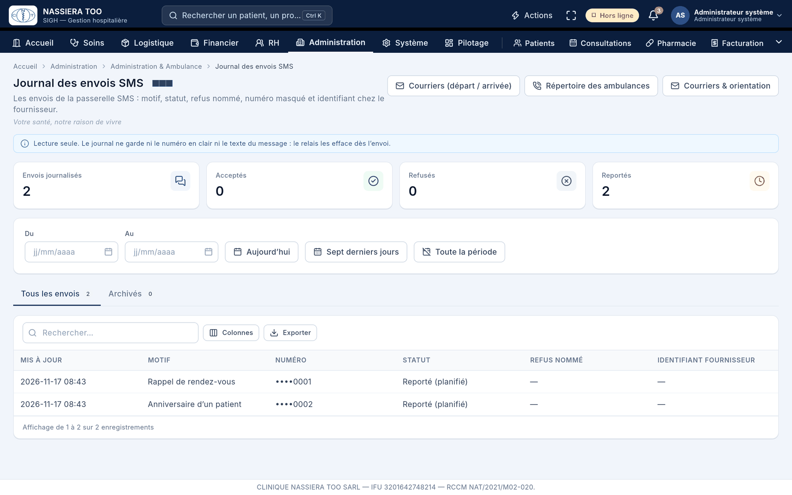
Le journal des envois SMS (capture Flutter), ici avec deux envois planifiés : numéros masqués, aucun texte.
⚠️
Pas encore vérifié
Aucun SMS réel n’a été envoyé. Les codes d’erreur réels de Twilio et de Vonage, la couverture du Bénin, l’acceptation d’un expéditeur alphanumérique (sinon un numéro au format +229… acheté chez le fournisseur) et le coût par message restent à vérifier avec un vrai compte, en recette sur site, la première semaine avec un plafond bas. Les envois automatiques sont désactivés par défaut : la Direction a validé les heures et les modèles, pas l’activation.
4.6 La satisfaction en ligne
Un patient peut répondre à un questionnaire de satisfaction sur son téléphone, par un code QR ou une adresse personnalisée du relais (https://sighcnt.nassieratoo.com/s/<jeton>). Ce n’est pas un portail patient : aucun nom ni numéro de dossier n’est demandé, aucune question ne porte sur la santé.
⚙️
Comment c’est protégé (ADR-0009)
La réponse est chiffrée dans le navigateur du patient avant d’être envoyée (échange de clés X25519, dérivation HKDF-SHA-256, chiffrement AES-256-GCM), avec la clé publique de la clinique. Le relais ne lit jamais une réponse.
Seule la mère peut les ouvrir : sa paire de clés est dérivée de la clé de clinique, jamais envoyée.
La page est publique, sans cookie ni session. Un jeton inconnu, expiré ou révoqué reçoit une seule réponse générique (page « indisponible »), sans nommer d’enquête.
Le relais vérifie la forme et le débit (10 réponses par adresse et par 10 minutes, enveloppe de 16 Kio au plus, un champ piège contre les robots, 200 liens ouverts au plus). Le commentaire libre est limité à 1 000 caractères.
La mère refuse toute réponse qui contiendrait un champ d’identité (nom, prénom, téléphone, courriel, dossier, patient).
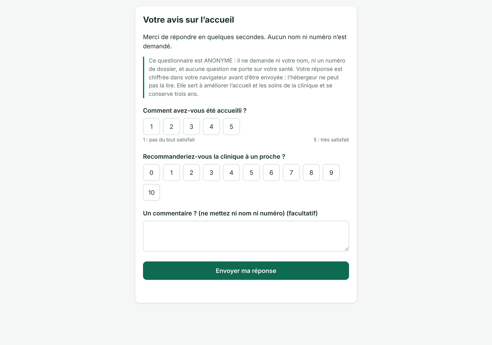
La page publique vue par le patient (capture du relais local) : questionnaire anonyme, réponse chiffrée avant l’envoi.
1. Ouvrir la collecte en ligne
La collecte en ligne est désactivée par défaut : une surface publique ne s’ouvre pas sans geste.
Sur la mère, ouvrez Système ➔ Paramètres système ➔ onglet Paramètres, famille Satisfaction en ligne.
Vérifiez Adresse publique du relais (liens et affiches) : https://sighcnt.nassieratoo.com.
Réglez Satisfaction en ligne (formulaire public) sur oui, avec sa date d’effet et son motif.
Les points de collecte sont sept : accueil, consultation, laboratoire, pharmacie, maternité, hospitalisation, sortie. Ils se règlent dans la même famille.
2. Publier un lien
Ouvrez Administration ➔ Administration & Ambulance ➔ Enquêtes & questionnaires. Un modèle d’enquête doit être validé (geste réservé valider_famille_enquetes, Direction, DAF et administrateur d’origine).
Sur la ligne du modèle, cliquez sur Partager à un tiers.
Dans Où le tiers répond-il ?, choisissez En ligne : adresse publique ou code QR (le relais ne lit pas la réponse), puis le Point de collecte et la date d’expiration du lien.
Cliquez sur Afficher le lien et le QR. Vous pouvez Copier l’adresse, Imprimer l’affiche (A4) ou Ouvrir la page publique.
Pour fermer un lien : Révoquer le lien. Il cesse de répondre ; une réponse reçue après la révocation est refusée (lien_revoque) un jour plus tard, acceptée le jour même.
La mère publie ses liens et relève les réponses chaque minute, puis les écrit en Réponses recueillies. Elle doit donc être allumée : les enveloppes attendent au relais, sans jamais être purgées.
3. Lire les résultats
Ouvrez Satisfaction des patients. Le taux de satisfaction est la part des notes 4 ou 5 sur le total des notes valides ; le taux de recommandation est la part des réponses « Oui » ou « Plutôt oui » ; le taux de réponse est « non calculable » tant que les passages à l’accueil ne sont pas comptés (jamais zéro).
⚠️
Navigateurs et vérifications à faire
La page exige un navigateur récent (Chrome 133, Firefox 130, Safari 17 ou plus). Sur un téléphone plus ancien, la page le dit et ne répond pas : aucun repli n’existe. À mesurer sur les téléphones du terrain.
Le relais n’est plus muet côté Internet : il faut un nom d’hôte public, du HTTPS, et un débit limité par l’adresse vue (derrière un mandataire, régler les mandataires de confiance).
Un tiers qui connaît un lien peut répondre : c’est le but. La protection contre l’abus est le débit, le champ piège, le plafond de liens et la révocation.
Hors lot : mode kiosque hors ligne, autres langues, alertes par SMS, modération des commentaires.
4.7 Fiscalité : versement CNSS, deux barèmes de l’AIB, imputations
Confirmer le versement CNSS
Le versement CNSS du 15 est une obligation « à confirmer par la CNSS ». Le bouton Confirmer la fait passer à « confirmée ». La référence est obligatoire, l’opération est signée, journalisée et versionnée par date. Elle demande le geste réservé confirmer_obligation_fiscale (administrateur, DAF et Direction d’origine, à valider). Ouvrez Système ➔ Configuration Clinique ➔ Paramètres fiscaux (IFU / RCCM), tableau Calendrier fiscal et social : sur la ligne de l’obligation « à confirmer », cliquez sur Confirmer. La fenêtre demande la Référence de la confirmation (le courrier, le courriel ou la page de la CNSS, avec sa date) et la date Confirmée à compter du. La version « à confirmer » reste lue pour les dates antérieures. Un fileul ne confirme pas (c’est de la configuration de la mère). Les échéances elles-mêmes se suivent à Financier ➔ Comptabilité SYSCOHADA ➔ Échéances fiscales & paiements (figure ci-dessous).
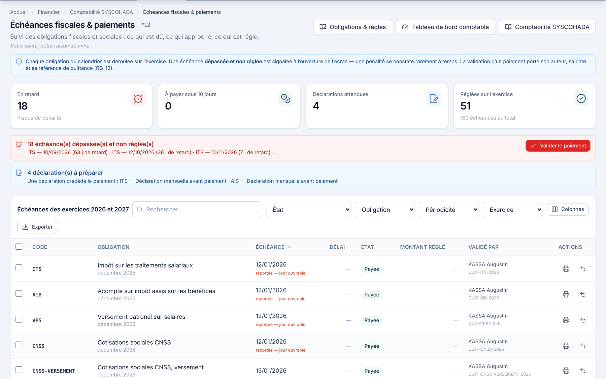
Échéances fiscales & paiements : ce qui est dû, ce qui approche, ce qui est réglé (maquette).
Les deux barèmes de l’AIB
Ouvrez Système ➔ Configuration Clinique ➔ Barème de l’AIB. Il y a deux barèmes datés, versionnés, qui ne se réécrivent jamais (corriger crée une version et ferme la précédente à la veille) :
la situation de l’acheteur (acheteur avec IFU actif 1 %, sans IFU actif 5 % depuis le 07/09/2026, prestation de service retenue par le payeur) ;
la retenue sur la facture d’un tiers : 3 % pour une personne physique, 5 % pour une personne morale. Hypothèse à confirmer : ce sont les mots de la Direction ; les textes officiels (CGI, mesure de la DGI du 07/09/2026) n’ont pas été lus au texte.
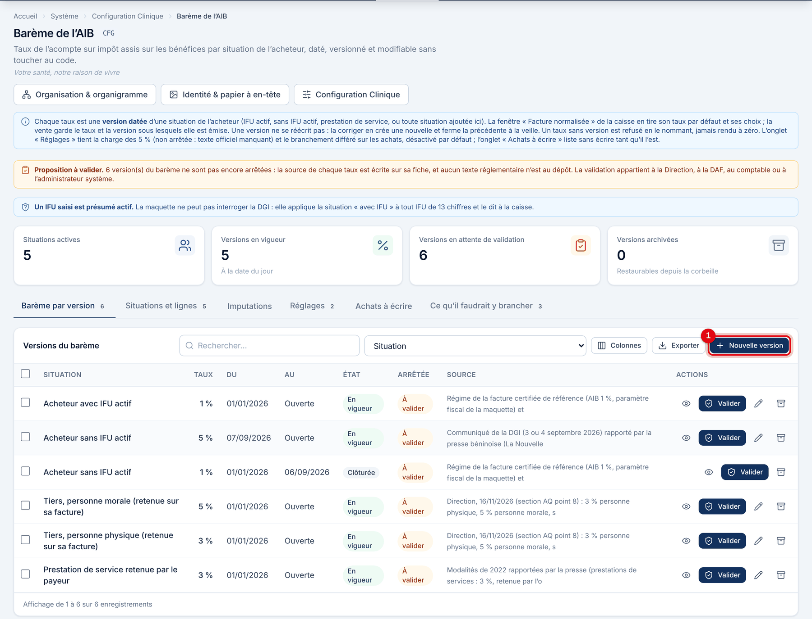
Le barème de l’AIB : situations, versions, taux, état « à valider ». (1) Nouvelle version.
Un taux sans version est refusé en le nommant, jamais rendu à zéro.
La validation d’une version se fait par la Direction, la DAF, le comptable ou l’administrateur. Toutes les versions de départ sont « à valider » : la source de chaque taux est écrite sur sa fiche et aucun texte réglementaire n’est au dépôt.
La facture d’un patient ne porte jamais d’AIB ni de bloc « Facture normalisée » (refus AIB_FACTURE_PATIENT). Seule la facture au tiers payeur (section 4.8) en porte.
Le motif est obligatoire pour toute modification faite par le validateur.
Imputer l’AIB opération par opération
L’onglet Imputations du barème permet au comptable d’appliquer ou non l’AIB à une opération (achat auprès d’un fournisseur, règlement d’un prescripteur ou prestataire externe, règlement reçu d’un assureur), de choisir la ligne du barème et le compte. Geste réservé imputer_aib (comptable, DAF et administrateur d’origine). Le logiciel propose le taux, il ne décide jamais.
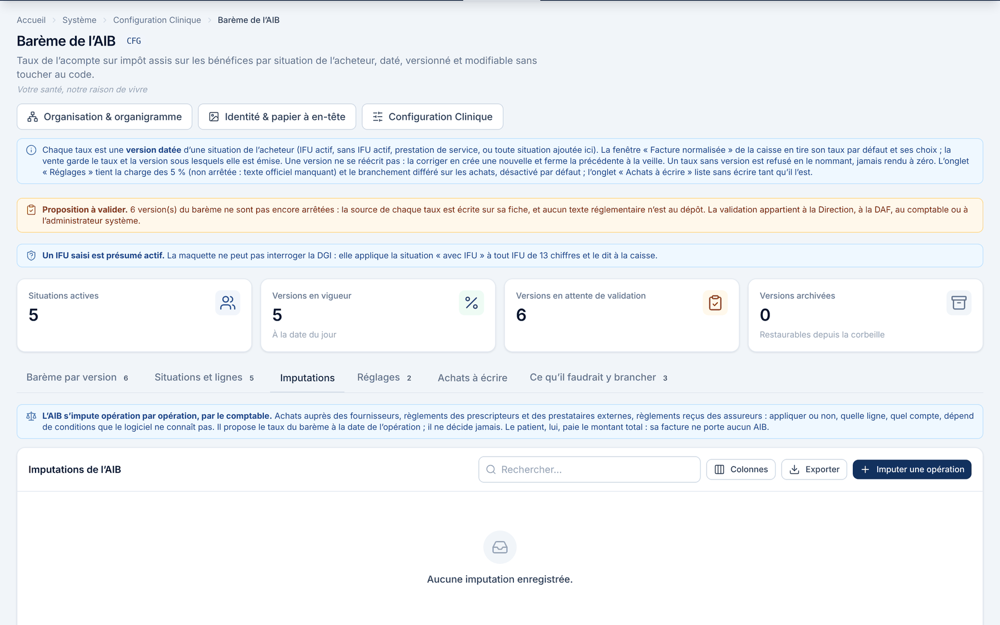
L’onglet Imputations : une imputation est un enregistrement signé, journalisé et annulable avec un motif.
⚠️
Limites à connaître
L’imputation n’écrit aucune écriture comptable : le branchement de l’AIB sur les écritures d’achat reste différé (décision du 09/11/2026, désactivé par défaut).
Les imputations ne se synchronisent pas encore entre postes : elles restent sur le poste qui les a écrites.
Au poste, la lecture et les imputations sont portées ; l’écriture d’une version du barème et celle des paramètres du calendrier fiscal étaient à la maquette au lot de référence : à vérifier sur le poste avant de promettre cette commande.
Aucune collection fiscale (obligations, échéances, barèmes, imputations) ne va vers un téléphone.
4.8 La facture au tiers payeur
La facture à une entreprise, un assureur ou une convention qui prend un patient en charge est une vente normalisée distincte de la facture du patient. Ouvrez Financier ➔ Facturation & Caisse ➔ Factures aux tiers payeurs.
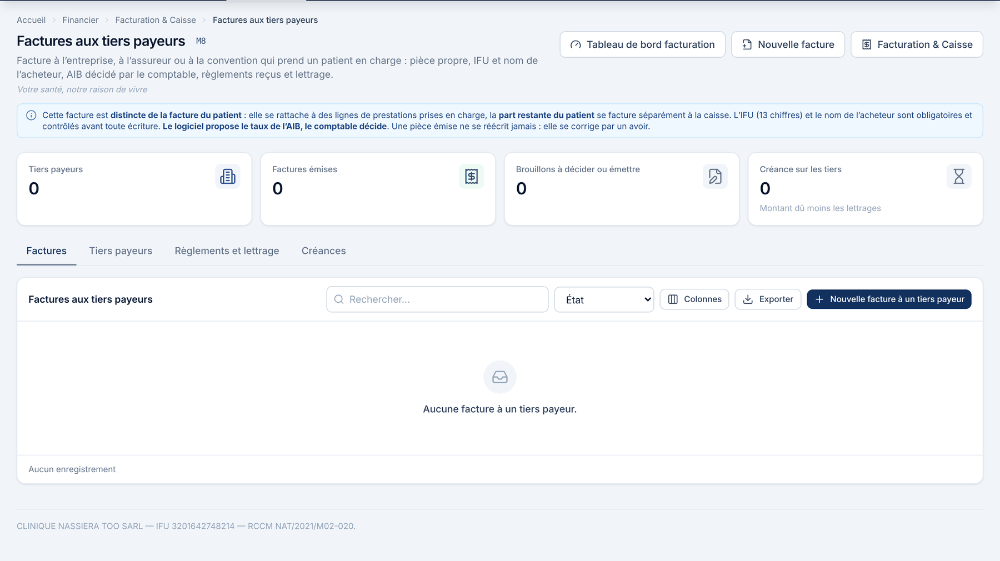
Factures aux tiers payeurs : onglets Factures, Tiers payeurs, Règlements et lettrage, Créances (maquette).
Droit (geste réservé)
Ce qu’il permet
Défaut semé (à valider)
emettre_facture_tiers
Tenir la fiche du tiers, proposer et émettre la facture, enregistrer un règlement reçu.
Caissier, DAF, comptable, administrateur
corriger_facture_tiers
Émettre un avoir, lettrer ou délettrer un règlement.
Comptable, DAF, administrateur
imputer_aib
Décider l’AIB : le caissier propose et émet, il ne décide jamais.
Comptable, DAF, administrateur
L’IFU (13 chiffres) et le nom de l’acheteur sont obligatoires et contrôlés avant toute écriture. La DGI n’est pas interrogeable : un IFU de 13 chiffres est présumé actif, et le comptable change la ligne du barème en le motivant.
Montant dû = base + AIB (hypothèse à confirmer : si l’AIB devait se soustraire du montant versé, la créance changerait de sens).
Une pièce émise ne se réécrit jamais : elle se corrige par un avoir (avoir total seulement, sans certification MECeF de l’avoir ni écriture de contre-passation à ce stade).
Le numéro FT-AAAA-nnnn est attribué par le poste qui émet : deux postes coupés de la mère peuvent attribuer le même numéro à deux pièces différentes. L’identité de synchronisation vient du contenu (tiers, date, prestations), pas du numéro.
Aucune écriture comptable n’est passée pour cette facture. La caisse du patient n’est pas modifiée. La facture, les prix d’achat et les tiers ne vont jamais vers un téléphone.
4.9 Le plan annuel de travail
Ouvrez Administration ➔ Administration & Ambulance ➔ Plan annuel de travail. Le plan est par exercice (l’exercice du jour par défaut) ; les références sont PA-AAAA-NNN, l’année étant celle de l’exercice.
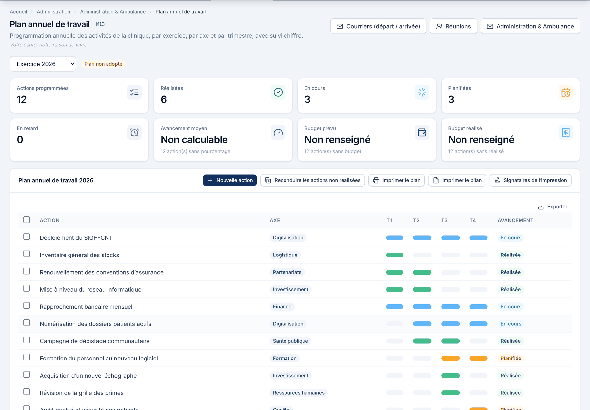
Le plan annuel de travail d’un exercice (maquette) : actions, responsables, trimestres, suivi chiffré.
Adopter le plan est le geste réservé adopter_plan_annuel (Direction et DAF d’origine, à valider). Après l’adoption, le contenu d’une action ne change plus que par version datée (même référence, version plus un, date d’effet et motif ; l’ancienne est archivée). Le suivi (état, pourcentage, budget réalisé) reste libre.
Le responsable d’une action est choisi par référence (jamais un texte libre). Les signataires sont un réglage daté (reglagesPlan) : une fonction par référence à un poste de l’organigramme, un à quatre signataires ; défaut semé : la Directrice Administrative et le Directeur Médical. Il se règle sur l’écran du plan lui-même, par le bouton Signataires de l’impression (geste regler_parametres_clinique), avec une date d’effet et un motif.
Une alerte de retard (une par action, dérivée) part vers les détenteurs du geste d’adoption quand le dernier jour du trimestre de fin est passé. La tolérance en jours est le paramètre de clinique plan.graceRetardJours (défaut 0, bornes 0 à 90), réglé à Règles métier versionnées.
Un budget non renseigné se lit « non renseigné », jamais zéro. Le rattachement à une ligne du module Budgets est informatif.
Les axes (neuf semés) et les états d’avancement (trois) sont en base ; aucun écran d’édition n’existe encore : pour en ajouter un, passer par le prestataire.
Le plan se synchronise (une action se suit champ à champ), jamais vers un téléphone. Le numéro PA-AAAA-NNN est attribué par chaque poste : deux postes coupés de la mère peuvent attribuer le même numéro à deux actions différentes.
4.10 Plannings individuels et valeurs d’attente du personnel
Sur RH ➔ Ressources humaines ➔ Planning & gardes et sur la fiche employé :
Le régime individuel d’un agent est « déroge » (seuls les champs renseignés changent, le reste suit sa catégorie) ou « remplace » (rien n’est hérité : vacations et repos sont exigés ; le cycle ou l’honoraire non dits sont « non défini »).
Le planning personnalisé est un modèle hebdomadaire ou mensuel, en versions datées figées. Il est contrôlé contre la grille dès sa définition (repos entre deux gardes, types permis). Il ne compte pour aucune prime : « Appliquer à une période » (92 jours au plus) le transforme en vacations validées, sans jamais écraser un jour occupé. La paie ne compte que les vacations validées (RG-11).
Les valeurs d’attente (salaire de base, catégorie, date d’embauche, numéro CNSS) sont marquées champ par champ : le jeu de départ les a tirées, aucune n’est arrêtée par la Direction. La marque tombe quand le champ est modifié, ou par Confirmer (motif obligatoire, journal RG-12). Un agent créé sans salaire n’en porte aucun : l’ancienneté sans date d’embauche est « non calculable ».
Geste réservé
Défaut semé
regler_regime_individuel
Administrateur, DAF
regler_planning_personnalise
Administrateur, DAF, Surveillant (pour son équipe)
confirmer_valeur_attente_personnel
Administrateur, DAF
ouvrir_fiche_personnel_equipe
Surveillant (section 3.3)
⚠️
Ce qui ne voyage pas
Les régimes individuels ne se synchronisent pas encore : un régime posé à la mère n’arrive pas chez un fileul. Seul le planning personnalisé voyage (famille A, identité par le contenu), jamais vers un téléphone.
4.11 La commande de stock gros (RG-04) sur n’importe quel poste
Valider une commande de stock gros avant sa transmission au fournisseur est le geste réservé valider_commande_stock : la Directrice Administrative seule d’origine (l’administrateur et la Direction ne valident pas à sa place). Le rôle qui le détient doit aussi lire l’écran Bons de commande. Le validateur enregistré est l’agent de la session.
La commande voyage à la synchronisation. Sur un fileul, la validation est une décision signée déposée à la mère (« commande_stock »), qui l’applique sous le rôle de l’auteur ; une validation écrite directement est refusée au rejeu.
Une commande créée sur un fileul porte une référence provisoireBC-AAAA-P<poste>-nnnn, remplacée par le rang définitif BC-AAAA-nnnn par la mère. Tant que la mère est coupée, la référence provisoire s’affiche et s’imprime. Deux commandes qui prennent le même rang à la même seconde sont marquées en doublon (jamais corrigées en silence).
L’identité commune est le contenu (fournisseur, jour, lignes) : deux commandes identiques le même jour au même fournisseur sont fusionnées. À connaître.
Les droits arbitrer_besoins (DAF, Direction, administrateur) et traiter_besoins_accordes (comptable, gestionnaire de stock) règlent les bons d’expression de besoins. Prix d’achat et fournisseur ne vont jamais vers un téléphone.
4.12 Les décisions qui attendent la mère
Une décision de validation (prix, commande, identité, plan…) se prend sur n’importe quel poste. Sur un fileul, elle est signée et déposée ; la mère l’applique mécaniquement. Une pastille « N décisions en attente de la mère » le dit. C’est une alerte, jamais un blocage.
Le délai d’alerte est de 4 heures par défaut (paramètre securite.delaiAlerteDecisionEnAttenteHeures, chapitre 9), réglé à Paramètres système ➔ onglet Paramètres, famille Sécurité.
La mère vérifie que le compte signataire existe avec ce rôle, sinon elle refuse en le nommant.
Un compte ne garde pas l’historique de ses changements de rôle : la mère compare le rôle au moment de l’application.
4.13 La messagerie du poste (SMTP)
Ouvrez Système ➔ Configuration Clinique ➔ Messagerie (SMTP). Cet écran règle le serveur de courriel de la clinique, qui sert à écrire à l’éditeur et à tout envoi de la clinique. Valeurs proposées (non secrètes) : serveur mail.sighcnt.nassieratoo.com, port 587 en STARTTLS (465 en SSL), identifiant et adresse d’expéditeur admin@sighcnt.nassieratoo.com.
Vérifiez Serveur SMTP, Port, Chiffrement et Adresse d’expéditeur.
Saisissez le Mot de passe de la boîte. Il est chiffré et jamais relu : l’écran dit seulement « défini » ou « non défini ».
Cliquez sur Enregistrer la messagerie.
Dans Test d’envoi, saisissez une Adresse de test et cliquez sur Envoyer un message de test : il montre la suite des étapes (connexion, salutation, chiffrement, authentification, expéditeur, destinataire, envoi) ou celle où cela échoue.
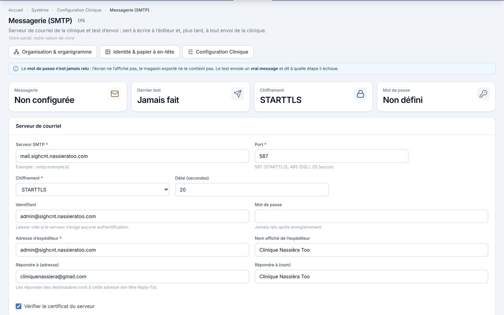
La messagerie du poste (maquette) : serveur, chiffrement, mot de passe jamais relu, test d’envoi.
ℹ️
Le relais a sa propre messagerie
Le relais envoie ses courriels (récupération de la clé) avec un serveur réglé dans Paramètres du relais (section 7.8), pas ici. Les deux utilisent le même serveur et la même boîte par défaut : mail.sighcnt.nassieratoo.com et admin@sighcnt.nassieratoo.com.
5. Sécurité et sauvegardes
5.1 Les trois niveaux de sauvegarde
Niveau
Ce qui est copié
Où
Section
Sauvegarde locale de la mère
Base de la mère (chiffrée, chaque nuit, gardée 7 jours) et fichiers numérisés
La destination réglée par la clinique
5.2 et 5.3
Sauvegarde hors site
Les mêmes copies, en blocs chiffrés par la clé de clinique
Relais web ou dossier distant monté
5.4
Journal chiffré au relais
Les opérations synchronisées
Relais web
5.5
Au repos, sur chaque poste, les données sont aussi chiffrées par une clé propre au poste (section 5.6). Ce chiffrement-là ne remplace aucune sauvegarde.
5.2 Choisir la destination de la sauvegarde locale
Ouvrez Système ➔ Sécurité & Utilisateurs ➔ Tâches planifiées.
Dans Sauvegarde du magasin et des fichiers numérisés, lisez la Destination.
Cliquez sur Destination de la sauvegarde (1) et choisissez un autre disque ou un partage réseau.
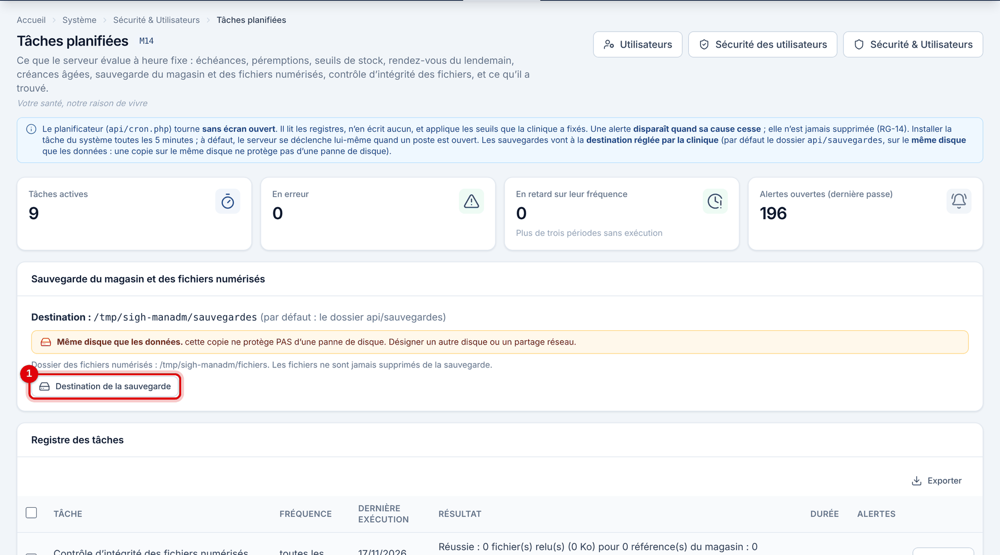
Tâches planifiées : la destination de la sauvegarde et le registre des tâches.
🛑
Même disque que les données
Par défaut, la copie est sur le même disque que les données. Elle ne protège pas d’une panne de disque. Désignez un autre disque ou un partage réseau dès l’installation.
ℹ️
Sur le poste
Sur l’application de poste, la sauvegarde et sa destination se règlent à Système ➔ Sécurité & Utilisateurs ➔ Sauvegardes & restauration (carte Sauvegarde hors site comprise), et à la console de la mère.
5.3 Sauvegarder et vérifier depuis la mère
Ouvrez Poste mère ➔ Sécurité et continuité ➔ Sauvegardes et restauration.
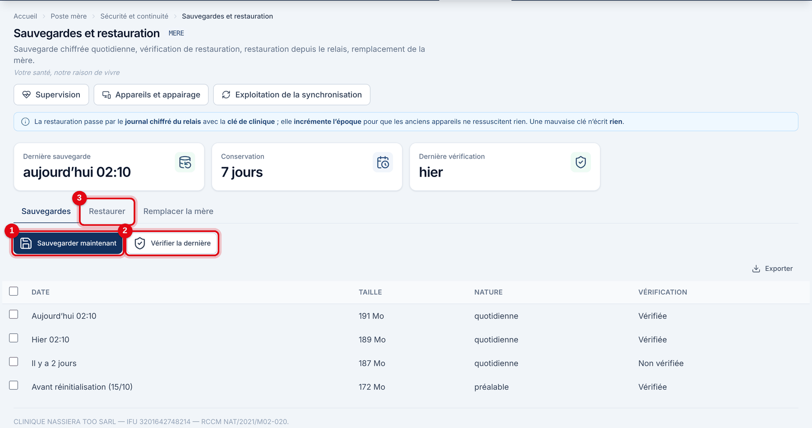
Sauvegardes et restauration de la mère. (1) Sauvegarder maintenant, (2) Vérifier la dernière, (3) onglet Restaurer.
Cliquez sur Sauvegarder maintenant (1) avant toute opération sensible (mise à jour, clôture, import important).
Cliquez sur Vérifier la dernière (2). La colonne Vérification passe à Vérifiée.
✅
Bonne pratique
Une sauvegarde jamais restaurée n’est pas une sauvegarde. Faites une restauration à blanc chaque mois sur une machine propre (section 5.5), et notez la date.
La copie hors site protège contre la perte de la clinique entière (vol, incendie, panne de disque). Elle est désactivée par défaut. Elle se règle sur la mère, par l’administrateur ou la DAF.
Elle se règle dans l’application de poste, carte Sauvegarde hors site de l’écran Sauvegardes & restauration (cette carte n’existe pas dans la maquette : les figures ci-dessous sont des captures Flutter du poste).
Sur la mère, ouvrez Système ➔ Sécurité & Utilisateurs ➔ Sauvegardes & restauration.
Dans la carte Sauvegarde hors site, cliquez sur Régler la copie hors site.
Cochez Copie hors site active.
Choisissez la Destination du magasin et la Destination des fichiers numérisés : Relais web, Dossier distant monté ou Aucune destination. Pour un dossier distant, saisissez son chemin complet.
Réglez Copies du magasin gardées (2 à 60), Copies des fichiers gardées (2 à 60), Fréquence des fichiers (minutes, 15 à 1440), Heure du contrôle de nuit (0 à 23) et Blocs vérifiés chaque nuit (0 à 200).
Saisissez le Motif (consigné dans le journal).
Cliquez sur Enregistrer. Le message Réglage enregistré. s’affiche.
Lancez une première copie avec Copier le magasin maintenant, puis Copier les fichiers maintenant. Contrôlez avec Contrôler les copies.
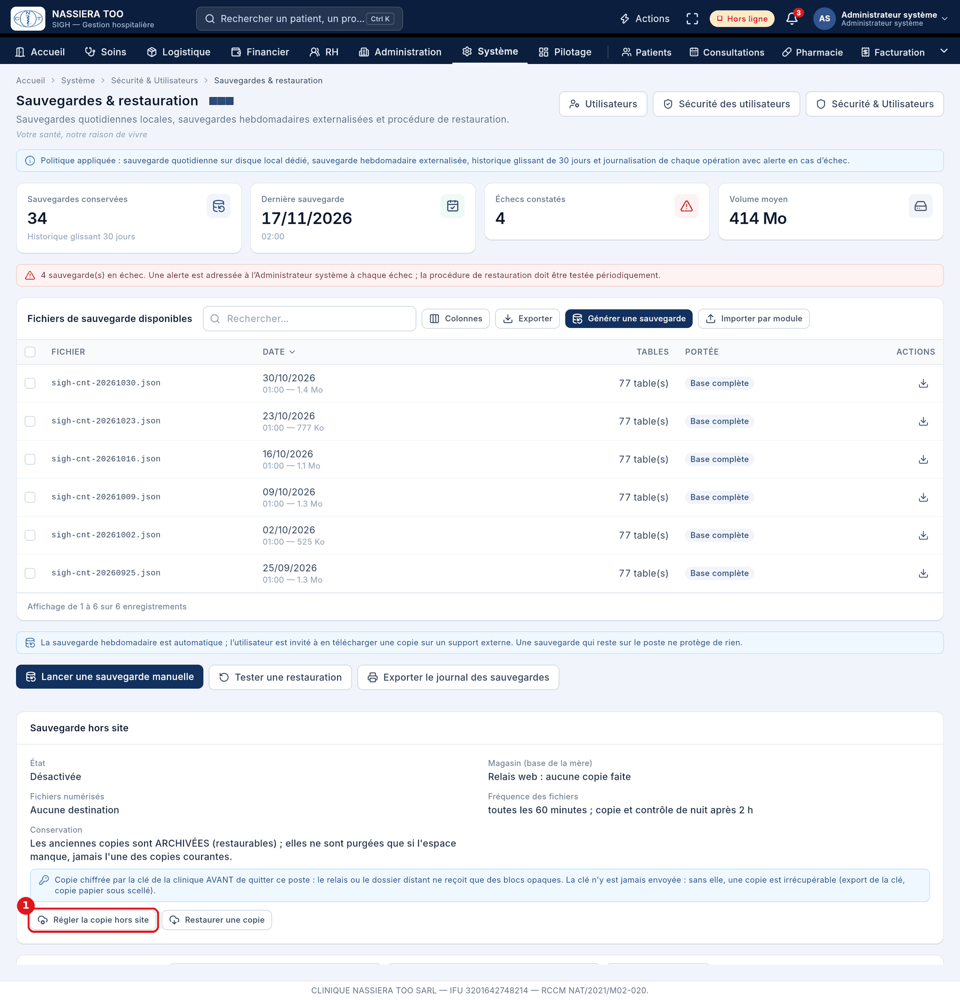
L’écran Sauvegardes & restauration du poste mère (capture Flutter, données de démonstration) : en bas, la carte Sauvegarde hors site, désactivée par défaut. (1) Régler la copie hors site.
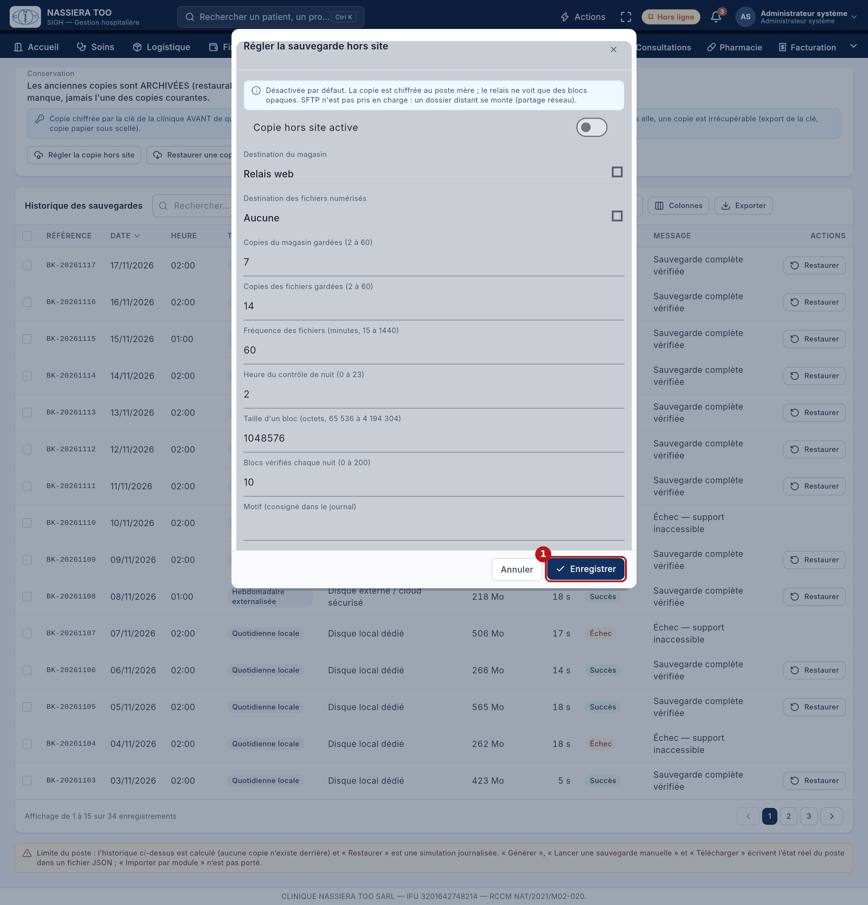
La fenêtre de réglage de la copie hors site (capture Flutter) : destination du magasin et des fichiers, copies gardées, heure du contrôle, motif. (1) Enregistrer.
ℹ️
Ce que voit le relais
La copie est chiffrée au poste mère par la clé de la clinique avant de partir. Le relais ou le dossier distant ne reçoit que des blocs opaques : des identifiants, des tailles, des dates. Un fileul lit le réglage, mais ne le pose pas.
⚙️
Paramétrage : la place sur l’hébergement
L’espace d’un cPanel mutualisé est limité. Le panneau du relais affiche l’espace utilisé (écran Sauvegarde du relais, section 7.8). Au-delà de N copies, la plus ancienne est archivée (toujours restaurable). Elle n’est purgée que si l’espace manque. Si l’espace manque encore, la copie est refusée avec le code ESPACE_RELAIS_INSUFFISANT et rien d’actuel n’est détruit : augmentez le quota, réduisez le nombre de copies gardées, ou passez à un dossier distant.
⚠️
Pas encore fait ni vérifié
La copie par SFTP n’existe pas. La mesure réelle sur l’hébergement cPanel (espace, taille maximale d’une requête, temps d’exécution) reste à faire avant la mise en service.
5.5 Restaurer, remplacer la mère
1. Restaurer une copie hors site
Dans la carte Sauvegarde hors site, cliquez sur Restaurer une copie.
Choisissez le type : Magasin (base de la mère) ou Fichiers numérisés, puis la copie.
Saisissez un Dossier NEUF de destination (chemin complet).
Tapez le mot de confirmation demandé (« Pour confirmer, tapez … »).
Cliquez sur Restaurer. Le message Copie restaurée et vérifiée. confirme.
ℹ️
Information
La restauration vérifie chaque bloc (empreinte, authentification, longueur) avant d’écrire. Un bloc altéré ou manquant est refusé et nommé : rien n’est restauré à moitié. La base en service n’est jamais touchée.
2. Remplacer la mère par une nouvelle machine
Installez le poste sur la nouvelle machine (chapitre 1).
Sur l’écran Sauvegardes et restauration de la mère, ouvrez l’onglet Remplacer la mère et suivez ses étapes.
La restauration passe par le journal chiffré du relais avec la clé de clinique : sans la bonne clé, rien n’est écrit.
🛑
Alerte
Remplacer la mère se fait par restauration sur la nouvelle machine, jamais par copie de fichiers. Une seule mère peut être active par clinique : l’ancienne doit être arrêtée. La restauration incrémente l’époque : les anciens appareils ne ressuscitent rien.
5.6 Le chiffrement au repos des données du poste
Les données d’un poste portent des dossiers de patients : elles sont chiffrées sur le disque. Un disque volé, ou un dossier copié par quelqu’un d’autre, ne donne rien de lisible.
Ce qui est chiffré, et comment
Élément
Où
Chiffrement
Les fichiers du magasin du poste (un fichier par collection, *.sigh)
%LOCALAPPDATA%\SIGHCNT\donnees
AES-256-GCM, un nonce frais à chaque écriture, le nom de la collection lié au chiffré (un fichier recopié sous un autre nom ne se déchiffre pas).
Les fichiers numérisés (scans)
sous-dossier fichiers
AES-256-GCM avec la même clé ; l’empreinte du fichier est liée au chiffré ; une empreinte altérée n’est jamais servie.
La configuration du poste (poste.json)
dossier des données
Chiffrée avec la même clé.
La base de la mère (mere.db) et le journal de chaque poste (poste.db)
dossier des données
SQLite3 Multiple Ciphers, algorithme ChaCha20-Poly1305, avec la même clé. La sauvegarde de la mère (VACUUM INTO) reste chiffrée.
⚠️
À dire exactement : ce que ce n’est pas
Ce n’est pas SQLCipher au sens strict : la base est chiffrée par SQLite3 Multiple Ciphers (bibliothèque voisine, algorithme ChaCha20-Poly1305). Ce n’est pas non plus un coffre matériel : c’est un chiffrement de fichiers dont la clé est liée à la session Windows. Quiconque ouvre la session Windows de l’agent peut utiliser le poste, comme l’agent.
La clé du poste
Une clé de 256 bits tirée au hasard, créée au premier démarrage, rangée dans cle-poste.bin.
Sous Windows, ce fichier est protégé par DPAPI (portée utilisateur) : il ne sert qu’à la session Windows qui l’a créé. Copié ailleurs, il ne s’ouvre pas.
La même clé sert aux fichiers, aux scans, à poste.json et aux deux bases. Une clé fausse est un refus nommé : le poste ne devine jamais une clé.
Un poste installé avant le chiffrement est migré : ses fichiers en clair sont relus puis réécrits chiffrés, le clair est supprimé ; une base en clair est chiffrée sur place à la première ouverture.
🛑
Sans la clé du poste, les données du poste sont illisibles
Une session Windows réinstallée, un compte Windows supprimé ou un poste remplacé rendent la clé inutilisable. Exportez-la dès l’installation (ci-dessous) et rangez le fichier au coffre, séparé de la phrase de passe et des sauvegardes. Pour la mère, le recours reste la restauration par le journal chiffré du relais avec la clé de clinique (section 5.5), qui ne dépend pas de la clé du poste.
1. Sauvegarder la clé du poste
Ouvrez Système ➔ Configuration Clinique ➔ Paramètres système, onglet Installation et données.
Cliquez sur Sauvegarder la clé de chiffrement (1). Ce bouton n’existe que sur le poste, quand le chiffrement est actif.
Saisissez une Phrase de passe de 12 caractères au moins, puis Confirmer la phrase de passe.
Cliquez sur Exporter la clé (2). Le fichier sigh-cle-AAAA-MM-JJ.cle est écrit dans le dossier de votre profil Windows et l’opération est journalisée.
Rangez le fichier au coffre (sur une clé USB, par exemple) et la phrase de passe ailleurs.
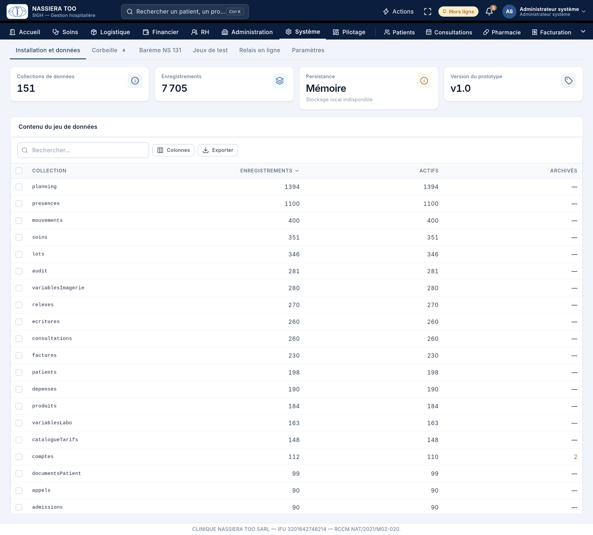
Paramètres système, onglet Installation et données (capture Flutter). (1) Sauvegarder la clé de chiffrement.
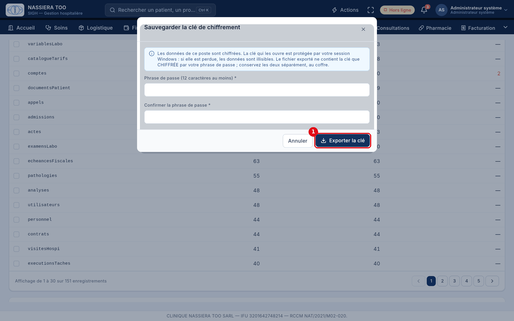
La fenêtre d’export de la clé (capture Flutter) : le fichier ne contient la clé que chiffrée par la phrase de passe (PBKDF2-SHA256, 200 000 tours, puis AES-256-GCM). (1) Exporter la clé.
2. Contrôler le chiffrement sur un vrai poste Windows (à jouer à la mise en service)
Ces trois contrôles n’ont jamais été faits sous Windows : ils sont à rejouer sur le poste réel, et à noter dans le registre de mise en service.
Les fichiers sont illisibles dans un éditeur. Fermez SIGH-CNT. Dans %LOCALAPPDATA%\SIGHCNT\donnees, ouvrez poste.json et un fichier *.sigh avec le Bloc-notes : aucun mot lisible (nom de patient, libellé de produit, identifiant). Ouvrez mere.db ou poste.db : le début du fichier ne doit pas afficher « SQLite format 3 ». Rouvrez l’application : tout se lit normalement.
Une copie sur une autre session n’est pas déchiffrable sans la clé exportée. Copiez tout le dossier donnees vers une autre session Windows (autre compte, ou autre ordinateur). Lancez le poste avec ce dossier : résultat attendu, le poste refuse de lire les données (clé illisible, refus nommé) et n’affiche aucun contenu de patient. Supprimez ensuite la copie.
Restaurer la clé sur un poste neuf. Voir l’alerte ci-dessous.
🛑
Restauration de la clé : pas d’écran aujourd’hui
Le code sait relire un fichier .cle avec sa phrase de passe et remettre la clé en service (la protéger de nouveau par DPAPI) : cette fonction est éprouvée par des tests automatiques (bonne phrase, mauvaise phrase, fichier étranger : refus nommés, rien n’est écrasé). Mais aucun écran du poste ne l’offre aujourd’hui. Un administrateur ne peut donc pas restaurer la clé seul : il faut le prestataire, ou attendre qu’un écran de restauration soit livré. Ne comptez pas dessus comme seul recours : conservez les sauvegardes de la mère et la clé de clinique (section 5.5).
6. Impression et MECeF
6.1 L’imprimante de caisse Xprinter XP-Q800
La caisse imprime ses reçus sur une imprimante thermique directe Xprinter XP-Q800 (ou une variante de même châssis, XP-N160II ou XP-C260N) : rouleau 80 mm, massicot, liaison USB ou Ethernet selon la version (à vérifier à l’arrière de l’appareil). C’est l’imprimante du gabarit rouleau 80 mm. Ce n’est pas le boîtier MECeF. Son modèle, son type, la largeur du rouleau, sa liaison et son nom sont un réglage daté en base, qui se règle à l’écran Configuration fiscale (section 6.2).
1. Installer l’imprimante sous Windows
Branchez l’imprimante (USB) ou reliez-la au réseau (Ethernet). Chargez un rouleau de 80 mm.
Installez le pilote Windows fourni par le fabricant avec l’imprimante.
Dans Paramètres Windows ➔ Imprimantes et scanners, définissez la XP-Q800 comme imprimante par défaut du poste de caisse.
Imprimez une page de test depuis Windows.
2. Imprimer un ticket depuis le poste
À la caisse, ouvrez l’aperçu du Ticket de caisse. Le gabarit fait 80 mm de large, sa hauteur suit le contenu.
Cliquez sur Imprimer : le poste envoie le document à l’imprimante par défaut du système. Vous pouvez aussi Enregistrer en PDF.
⚠️
Non vérifié sur matériel réel
L’impression vers une imprimante physique n’a pas été essayée dans l’environnement de rédaction, ni la coupe du massicot. Sans imprimante par défaut, le poste affiche un refus nommé : « Vérifier qu’une imprimante par défaut est installée. » Faites un essai de ticket complet sur la vraie caisse avant la mise en service.
✅
Bonne pratique
Sur le poste de caisse, la XP-Q800 est l’imprimante par défaut. Les documents A4 (factures détaillées, états) s’impriment depuis un autre poste, ou en choisissant l’imprimante A4 dans la boîte d’impression du lecteur PDF.
6.2 MECeF : choisir le mode de certification
Le MECeF certifie les factures normalisées. La Direction a retenu le boîtier physique, avec une certification locale à la caisse. Deux modes existent : Boîtier physique (défaut) et e-MECeF.
Dans Mode de certification, lisez le Mode en vigueur.
Cliquez sur Régler le mode (1) (sur le poste : choisissez le mode puis Enregistrer le mode). Le geste réservé est regler_mode_mecef.
Lisez la carte État de la caisse : ventes encaissées non normalisées, montant encaissé non normalisé, avoirs en attente de certification (comptés à part). Un montant inconnu rend le total « Non calculable », jamais zéro.
Dans la carte Imprimante de caisse, lisez le Nom, le Modèle (Xprinter XP-Q800), le Type (thermique, rouleau 80 mm) et la Liaison (semée « À vérifier à l’arrière de l’appareil »). Cliquez sur Régler l’imprimante (2) pour poser la liaison réelle (USB ou Ethernet). Le geste réservé est regler_imprimante_caisse.
Vérifiez les Paramètres fiscaux : ils sont en lecture seule ici et viennent de l’identité légale (section 4.2).
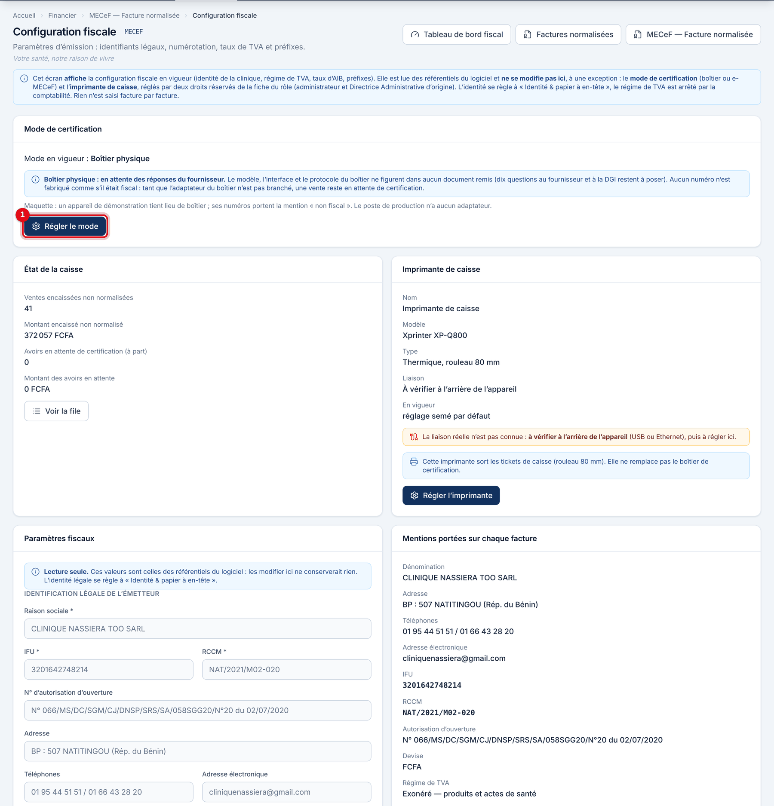
Configuration fiscale (maquette) : mode de certification, état de la caisse, imprimante de caisse, paramètres fiscaux.
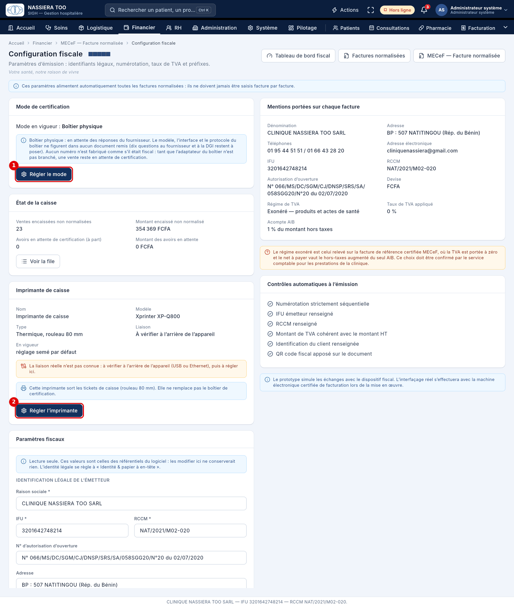
La même page sur le poste (capture Flutter). (1) Régler le mode, (2) Régler l’imprimante.
⚙️
Paramétrage
Le mode et l’imprimante se règlent par deux gestes réservés distincts de la fiche des droits (administrateur et Directrice Administrative d’origine). Ils sont enregistrés en base (paramètres mecef.mode et mecef.imprimante), versionnés par date, et ne partent jamais vers un téléphone. Un réglage ne s’insère pas dans le passé : la date d’effet est aujourd’hui ou à venir (des tickets sont déjà imprimés). Le mode « Désactivé » de démonstration n’est plus proposé.
ℹ️
Retransmettre une vente refusée ou expirée
Le caissier peut retransmettre une seule fois une vente refusée ou expirée (geste retransmettre_mecef : caissier, DAF, administrateur). La retransmission sans limite d’essais demande retransmettre_mecef_sans_limite (DAF, administrateur). Le nombre d’essais (un) est une constante de la règle.
⚠️
Boîtier en attente des réponses du fournisseur
Le modèle du boîtier, son interface et son protocole ne figurent dans aucun document remis. Les questions au fournisseur et à la DGI ont été remises à la Direction. Tant que l’adaptateur du boîtier n’est pas branché :
une vente est encaissée et reste en attente de certification ;
elle ne reçoit aucun numéro : aucun numéro n’est fabriqué comme s’il était fiscal ;
elle se retransmet quand l’adaptateur sera branché, sans consommer l’essai du caissier.
Le mode e-MECeF est dans le même cas : non configuré, le dossier d’interface de la DGI est requis. La maquette, elle, simule un appareil de démonstration et le dit ; le poste n’a aucun adaptateur.
🔍
Où regarder
Les factures en attente se lisent à Transmission & réponses. Le Journal des transactions est immuable : une facture erronée se corrige par un avoir (Avoirs & annulations), jamais par modification.
7. Le relais web sur cPanel
7.1 Ce que fait le relais, ce qu’il ne voit jamais
Le relais est installé sur l’hébergement mutualisé cPanel de la clinique, au domaine sighcnt.nassieratoo.com. Il est opaque : il stocke des enveloppes chiffrées de bout en bout et des indicateurs sans nom de patient. Il ne détient aucune clé. Trois exceptions bornées, décidées par la Direction et écrites en ADR, sont dites dans ce chapitre : la sauvegarde hors site (blocs opaques, ADR-0007), la passerelle SMS (numéro et texte visibles le temps de l’envoi, ADR-0008, section 7.11) et la page publique de satisfaction (réponses scellées dans le navigateur, ADR-0009, section 7.12).
Le relais voit
Le relais ne voit jamais
L’identifiant et l’état de chaque appareil
Le sens, le rang, la taille et la date d’une enveloppe
Les indicateurs publiés par la mère (agrégats sans nom)
L’état de synchronisation des fileuls (compteurs, horodatages)
L’identifiant, la taille et la date d’un bloc de sauvegarde
Le numéro, le texte, l’heure et le type d’un SMS planifié, jusqu’à son envoi (puis ils sont effacés)
Le contenu d’une enveloppe (chiffré)
Un nom de patient, un dossier, un motif
Le nom d’une collection ou d’un champ
Le contenu, le nom ou le nombre de fichiers d’une sauvegarde
La clé de clinique
Une réponse de satisfaction (chiffrée dans le navigateur du patient)
Un annuaire, une date de naissance, un rendez-vous, un motif
🛑
Protégez-le comme un serveur de santé
Même compromis, le relais ne livre pas de dossier. Mais il porte l’accès aux boîtes des téléphones et les sauvegardes chiffrées. HTTPS obligatoire, mot de passe superadmin long, secret de la mère long.
ℹ️
Contraintes de l’hébergement
PHP 8.2 ou plus, PostgreSQL, une tâche cron chaque minute. Pas de SSH, pas de Redis, pas de WebSocket, pas de npm. Le panneau n’utilise aucune ressource externe.
7.2 Déployer le relais
1. Préparer le dossier sur un poste de développement
Dans le dossier apps/web, lancez composer install --no-dev --optimize-autoloader. Cela produit le dossier vendor/ (cPanel n’a ni Composer ni SSH).
Lancez php artisan key:generate --show et gardez la valeur affichée pour APP_KEY.
2. Téléverser
Téléversez tout le dossierapps/webhors de public_html, par exemple dans ~/sigh-relais/ (Gestionnaire de fichiers de cPanel, ou « Git Version Control » si l’hébergeur le propose).
Dans cPanel, faites pointer le domaine sighcnt.nassieratoo.com vers ~/sigh-relais/public.
Activez le certificat HTTPS du domaine (AutoSSL ou équivalent de l’hébergeur).
🛑
Alerte
La racine web doit être public/, rien d’autre. Le reste du dossier contient .env, vendor/ et le code : il ne doit jamais être servi.
3. Base de données et PHP
cPanel ➔ PostgreSQL Databases : créez la base, l’utilisateur, et accordez tous les privilèges.
cPanel ➔ MultiPHP Manager : choisissez PHP 8.2 ou plus pour le domaine.
cPanel ➔ Select PHP Version : activez les extensions pdo_pgsql, mbstring, openssl, ctype, json.
Donnez les droits d’écriture aux dossiers storage/ et bootstrap/cache/ (755, ou 775 si l’hébergeur l’exige).
7.3 Le fichier .env
Copiez production.env.exemple en .env à la racine du dossier téléversé, puis renseignez-le. Le tableau donne les variables, jamais leurs valeurs secrètes.
Variable
Valeur attendue
APP_ENV
production
APP_DEBUG
false
APP_URL
https://sighcnt.nassieratoo.com
APP_KEY
la valeur produite par key:generate --show (secret)
smtp, mail.sighcnt.nassieratoo.com, 587, admin@sighcnt.nassieratoo.com, admin@sighcnt.nassieratoo.com (valeurs non secrètes, déjà dans .env.example)
MAIL_PASSWORD
laissez vide : le mot de passe de la boîte se saisit dans le panneau, chiffré (secret)
🛑
Les secrets
Le .env n’est jamais versé au dépôt de code, jamais envoyé par courriel, jamais photographié. Rangez une copie des secrets avec la copie papier de la clé de clinique. La clé de clinique, elle, ne va jamais sur le relais.
⚙️
Messagerie du relais
Le serveur d’envoi et son mot de passe se règlent dans le panneau (Paramètres du relais, carte Messagerie SMTP du relais), pas dans le dépôt. Les valeurs proposées sont celles de la clinique : serveur mail.sighcnt.nassieratoo.com, port 587 en STARTTLS (465 en SSL), boîte admin@sighcnt.nassieratoo.com. Le mot de passe est chiffré et jamais relu. Un bouton Envoyer un message de test nomme l’étape en échec.
7.4 Commandes ponctuelles et tâche cron
Sans SSH, une commande se lance par une tâche cron à usage unique : cPanel ➔ Cron Jobs, réglez l’heure sur la minute suivante, attendez l’exécution, puis supprimez la tâche. Le chemin de PHP est /usr/local/bin/php (ou ea-php82 selon l’hébergeur).
Besoin
Commande
Exporter la base avant une migration
cd ~/sigh-relais && /usr/local/bin/php artisan relais:exporter --avant-migration
Créer les tables
cd ~/sigh-relais && /usr/local/bin/php artisan migrate --force
Créer le compte superadmin
cd ~/sigh-relais && /usr/local/bin/php artisan relais:superadmin <courriel> --mot-de-passe='<mot de passe>'
Vider les caches après une mise à jour
cd ~/sigh-relais && /usr/local/bin/php artisan optimize:clear
Voir les volumes (sans contenu)
php artisan relais:statut
🛑
Alerte
Après la création du compte superadmin, effacez aussitôt la ligne de cron qui contient le mot de passe.
⚠️
Longueur du mot de passe superadmin
Le code du relais, la commande relais:superadmin comme l’écran Comptes superadmin, exige 8 caractères au moins (décision de la Direction, cohérente avec le poste). Le fichier lisez-moi de apps/web dit encore 12 : cet écart de texte est à corriger dans ce fichier. Choisissez de toute façon 12 caractères au moins.
relais:surveiller chaque minute : marque le passage du cron (écran Hébergement), lève ou résout les alertes ;
relais:exporter chaque jour à 03:00 : export de la base du relais ;
relais:purger --oui chaque jour à 03:10 : purge de l’audit au-delà de 365 jours (30 au minimum). Les enveloppes ne sont jamais purgées depuis le relais.
relais:sms-envoyerchaque minute, sans chevauchement : envoie les SMS arrivés à l’heure et efface le texte clair dès l’envoi (section 7.11).
⚠️
Sans le cron, rien ne part
Sans la tâche permanente, l’écran Hébergement affiche une alerte « Tâche cron non exécutée » et aucun SMS ne part : la passerelle dépend du cron du relais, surveillé par relais:surveiller.
7.5 Brancher la mère et contrôler avant la mise en service
Sur la mère, faites Activer le mode mère avec l’adresse sighcnt.nassieratoo.com et le même secret que RELAIS_SECRET_MERE (section 2.1).
Ouvrez le panneau : le Tableau de bord du relais doit afficher Mère ➔ En ligne (section 7.6).
Liste de contrôle
https://sighcnt.nassieratoo.com/panneau redirige vers la connexion ; l’accueil / aussi ; la seule page publique est le formulaire de satisfaction /s/<jeton> (un jeton inconnu reçoit une page « indisponible »).
https://sighcnt.nassieratoo.com/.env et …/vendor/autoload.php renvoient une erreur 404.
RELAIS_BANC=false, APP_DEBUG=false, HTTPS forcé.
Aucune route banc/* ne répond (elles renvoient 404 sans RELAIS_BANC).
La passerelle SMS est désactivée à la mère tant que les identifiants du fournisseur ne sont pas posés et testés (section 7.11).
Une sauvegarde de la base du relais est planifiée.
La clé de clinique n’est ni sur le relais, ni dans le dépôt : copie papier sous scellé chez la Direction, détenteur nommé.
L’écran Hébergement ne montre aucune alerte.
7.6 Le panneau superadmin : connexion et tableau de bord
Ouvrez https://sighcnt.nassieratoo.com/panneau.
Saisissez le Courriel et le Mot de passe du compte superadmin.
Cliquez sur Se connecter (1).
La connexion au panneau : accès réservé à l’administrateur système. Six essais par minute au plus.
Le menu du panneau a quinze entrées : Tableau de bord du relais, Appareils, Boîtes aux lettres, Codes d’appairage, Indicateurs reçus, Synchronisation, Alertes et notifications, Journal d’audit du relais, Comptes superadmin, Paramètres du relais, Hébergement, Sauvegarde du relais, Passerelle SMS, Preuve d’opacité, Consultation des copies. Un compte qui n’est pas superadmin ne voit aucune entrée.
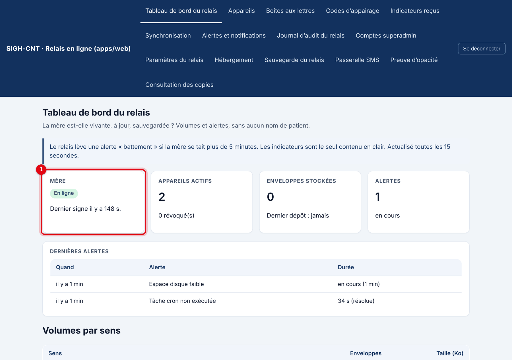
Le tableau de bord : (1) la mère est-elle vivante ? Appareils actifs, enveloppes, alertes en cours. Actualisé toutes les 15 secondes.
ℹ️
Sur la capture
La copie locale tourne sur un ordinateur de test, sur une base vierge (une mère de démonstration, deux appareils) : l’alerte « Espace disque faible » est réelle pour cet ordinateur. Sur l’hébergement, elles disparaissent quand le disque a de la place et que le cron tourne.
7.7 Appareils, codes, synchronisation, alertes
Appareils
L’écran Appareils liste les appareils appairés : fonction, identifiant, état, dernier contact, enveloppes en attente.
Les appareils vus par le relais. (1) Révoquer.
⚠️
Révoquer ici ne suffit pas
Révoquer coupe l’accès au relais. La fiche de l’appareil sur la console de la mère reste à mettre à jour. À l’inverse, une révocation faite sur la mère coupe aussi l’accès au relais : préférez révoquer depuis la mère (section 2.5).
Codes d’appairage
Le relais ne stocke que l’empreinte d’un code, jamais le code lui-même. Un code utilisé est refusé ; un code expire au bout de 15 minutes.
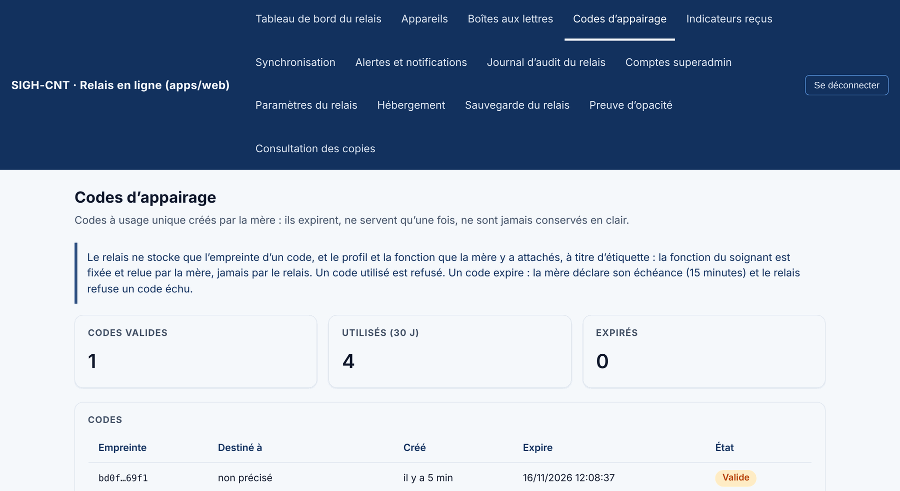
Codes d’appairage : valides, utilisés, expirés.
Synchronisation
L’écran Synchronisation (lecture seule) montre la mère, ses fileuls et les mobiles : dernier contact, retard, boîtes en attente. Une valeur que personne n’a publiée se lit « non publié », jamais zéro.
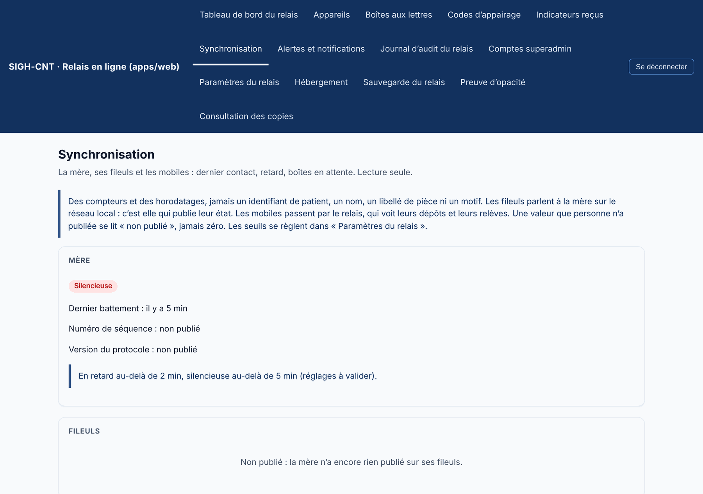
Synchronisation : état de la mère, des fileuls (publiés par la mère) et des mobiles.
Alertes et notifications
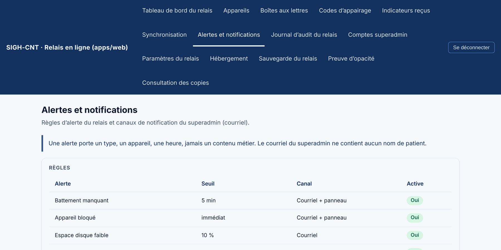
Les règles d’alerte : battement manquant, appareil bloqué, disque, cron, fileul ou mobile silencieux, boîte qui grossit.
⚙️
Paramétrage des seuils
Les seuils du battement, du disque et du cron se règlent dans le .env. Ceux de la synchronisation (fileul, mobile, boîte aux lettres) se règlent en base, dans Paramètres du relais. Toutes les valeurs de départ sont des propositions à valider par la Direction.
7.8 Paramètres, hébergement, sauvegarde du relais
Paramètres du relais
Paramètres du relais : chaque valeur dit où elle se règle. Le secret de la mère n’est jamais affiché.
ℹ️
Information
Les paramètres de la clinique (taux, dates, circuits, modes) ne se règlent pas ici : ils se règlent au poste, voyagent chiffrés, et le relais ne les lit pas.
Hébergement
Hébergement : PHP, base, cron, disque, certificat. (1) Le passage du cron schedule:run.
🔍
Où regarder
Après la mise en service, consultez Hébergement chaque semaine : la ligne Cron schedule:run doit être OK, le disque sous le seuil, le certificat TLS valide.
Sauvegarde du relais
Ouvrez Sauvegarde du relais.
Cliquez sur Exporter maintenant (1). Le fichier est déposé dans storage/app/exports.
Téléchargez-le par le Gestionnaire de fichiers de cPanel et rangez-le hors de l’hébergement.
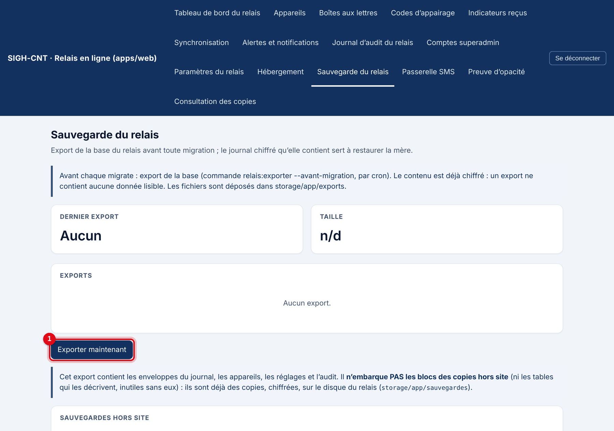
Sauvegarde du relais : exports de la base et, plus bas, l’espace utilisé par les sauvegardes hors site de la mère.
ℹ️
Information
L’export contient les enveloppes du journal, les appareils, les réglages et l’audit, déjà chiffrés. Il n’embarque pas les blocs des copies hors site (ils sont déjà des copies chiffrées, dans storage/app/sauvegardes). Perdre la base du relais ne perd pas les données de la clinique, qui vivent sur la mère, mais perdrait les boîtes des téléphones non relevées.
7.9 Preuve d’opacité, journal, comptes superadmin
Preuve d’opacité : aucune clé au relais, entropie des enveloppes, tableau « ce que le relais voit ».
L’écran Preuve d’opacité démontre que l’hébergeur ne peut rien lire : il mesure l’entropie des enveloppes stockées (un bon chiffrement approche 8 bits par octet) et vérifie qu’aucun bloc de sauvegarde ne porte une signature de fichier ou du texte lisible.
L’écran Journal d’audit du relais donne qui a fait quoi sur le panneau : connexions, révocations, codes, changements de paramètres. Aucune action anonyme (RG-12).
Changer le mot de passe superadmin
Ouvrez Comptes superadmin.
Saisissez le Mot de passe actuel, le Nouveau mot de passe et la Confirmation.
Cliquez sur Changer le mot de passe (1).
Comptes superadmin : comptes, sessions ouvertes, changement de mot de passe.
⚠️
Double facteur
Le double facteur n’est pas encore pris en charge par le relais : la colonne le dit. Un nouveau compte superadmin se crée seulement par la commande relais:superadmin (section 7.4), jamais par une inscription publique.
Consultation des copies
L’écran Consultation des copies permet de lire les dossiers copiés par les postes, avec la clé de la clinique saisie dans la page. La clé reste dans votre navigateur et n’est jamais envoyée au serveur ; fermer la page l’oublie.
🛑
Alerte
N’utilisez la consultation des copies que sur un ordinateur de confiance, jamais sur un poste public. Fermez la page juste après.
7.10 Mettre à jour le relais
Exportez la base du relais (relais:exporter --avant-migration par cron à usage unique, ou Exporter maintenant).
Préparez le nouveau code sur le poste de développement (section 7.2, étape 1).
Téléversez en écrasant, en conservant.env et storage/.
Lancez migrate --force par cron à usage unique.
Lancez optimize:clear par cron à usage unique.
Vérifiez le tableau de bord : Mère ➔ En ligne.
7.11 La passerelle SMS du relais
Le relais envoie les SMS que la mère lui dépose (section 4.5). Il lui faut un compte chez Twilio ou Vonage, ses identifiants dans le .env, et le cron d’une minute (section 7.4).
1. Poser les identifiants du fournisseur
Ouvrez le .env du relais (section 7.3) dans le Gestionnaire de fichiers de cPanel.
Choisissez le fournisseur : RELAIS_SMS_FOURNISSEUR=twilio ou RELAIS_SMS_FOURNISSEUR=vonage.
Pour Twilio : renseignez RELAIS_SMS_TWILIO_SID et RELAIS_SMS_TWILIO_TOKEN. Pour Vonage : RELAIS_SMS_VONAGE_KEY et RELAIS_SMS_VONAGE_SECRET.
Renseignez RELAIS_SMS_EXPEDITEUR : un numéro +229… acheté chez le fournisseur, ou un identifiant alphanumérique de 1 à 11 caractères (à confirmer pour le Bénin).
Enregistrez, puis videz les caches par une tâche cron à usage unique (optimize:clear, section 7.4).
Ouvrez Passerelle SMS au panneau : la carte Fournisseur doit afficher « Identifiants : défini ».
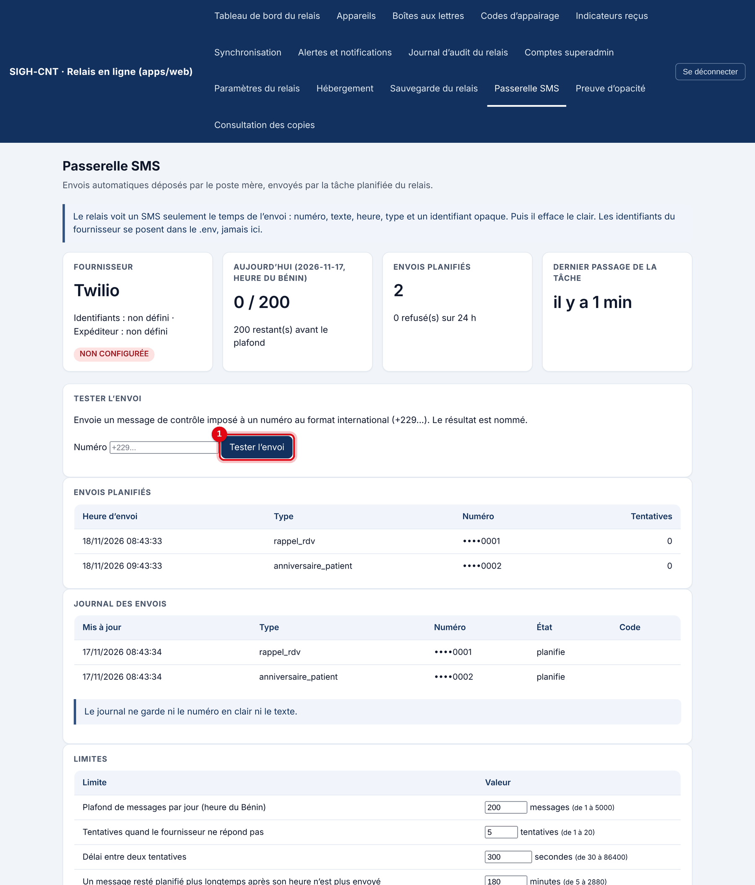
La page Passerelle SMS du panneau (copie locale, identifiants non définis, deux envois de démonstration planifiés). (1) Tester l’envoi.
Fournisseur : le nom, « défini » ou « non défini » pour les identifiants et l’expéditeur, et le badge Non configurée ou Prête. Les identifiants ne s’affichent jamais.
Aujourd’hui : les envois du jour sur le plafond, comptés à l’heure du Bénin.
Envois planifiés : heure, type, numéro masqué (les quatre derniers chiffres), tentatives. Dernier passage de la tâche : doit dater de moins d’une minute.
Tester l’envoi : un message de contrôle à un numéro au format international ; le résultat est nommé.
Journal des envois : sans numéro en clair ni texte. Limites : plafond, tentatives, délai de reprise, péremption, conservation ; Enregistrer les limites refuse une valeur hors bornes en la nommant, et journalise le changement à l’audit du relais.
2. Ce qui se passe, et ce que le panneau dit
Situation
Ce que fait le relais
Identifiants non posés
Le message attend ; le panneau le dit (SECRET_NON_DEFINI). Rien ne part.
Plafond du jour atteint
Le message est refusé (PLAFOND_ATTEINT), pas reporté.
Fournisseur injoignable
5 tentatives (réglables), puis refus FOURNISSEUR_INJOIGNABLE.
Message resté planifié 3 heures après son heure (réglable)
Refusé (HEURE_DEPASSEE) : un rappel de la veille ne part pas le lendemain.
Un passage de la tâche meurt en plein envoi
Le message reste « en cours » et n’est jamais renvoyé : un doublon est pire qu’un oubli signalé.
Dépôt invalide de la mère
Refus nommé : IDENTIFIANT_NON_OPAQUE (un code de patient ou de rendez-vous est refusé), TYPE_INCONNU, NUMERO_INVALIDE (format E.164), TEXTE_VIDE, TEXTE_TROP_LONG (plus de 320 caractères), HEURE_INVALIDE.
Un appareil appairé (téléphone, fileul) appelle la passerelle
Refus 403 sms_reserve_mere : la famille de routes /sms/* est réservée à la mère.
🛑
Ce que voit un superadmin
Le panneau masque les numéros, mais un compte qui lit la base du relais lit les numéros et les textes des messages planifiés. Limitez les comptes superadmin et reconnaissez cet accès au registre de la clinique.
7.12 La page publique de satisfaction
Le relais sert le formulaire de satisfaction (section 4.6). Il ne gagne que deux familles de routes :
Publiques, sans cookie, sans session : GET /s/<jeton> (le formulaire) et POST /s/<jeton> (le dépôt d’une enveloppe scellée). Le relais ne connaît un jeton que par son empreinte SHA-256 ; jeton inconnu, expiré ou révoqué : une seule page « indisponible » (404).
Réservées à la mère : /satisfaction/publier (clé publique et liens) et /satisfaction/releve (les enveloppes). Un appareil appairé reçoit 403 satisfaction_reservee_mere.
Vérifiez que https://sighcnt.nassieratoo.com/s/test répond par la page « indisponible » (aucun lien n’existe encore).
Sur la mère, ouvrez la collecte en ligne (section 4.6) et publiez un lien.
Ouvrez le lien sur votre téléphone et répondez : la réponse apparaît à la mère dans la minute qui suit, jamais en clair au relais.
⚠️
À savoir
La limite de débit (10 réponses par adresse et par 10 minutes) dépend de l’adresse vue : derrière un mandataire, réglez les mandataires de confiance. Les enveloppes sont gardées au relais et jamais purgées. Un export de la base du relais les contient, déjà chiffrées.
8. Droits réservés
8.1 Ce qu’est un geste réservé
Un geste réservé est un acte qui engage un professionnel nommé : valider un seuil du laboratoire, décider un prix, valider une commande de stock gros, confirmer le versement CNSS, régler la passerelle SMS… Chacun est un droit de la fiche des droits, accordé par rôle (jamais par agent), avec un défaut semé qui reproduit la liste qui existait avant que le geste devienne un droit.
La liste ci-dessous est engendrée depuis packages/rbac/data/rbac.json (clé gestes), la source unique : gestes, aucun omis.
Un geste n’ouvre aucun écran, sauf mention contraire : le rôle qui le détient doit aussi lire l’écran concerné (chapitre 3).
Sans le droit, la commande est absente de l’écran, jamais grisée, et le moteur refuse aussi en citant le droit : masquer un bouton ne protège rien.
Une surcharge de la fiche accorde autant qu’elle restreint : on peut retirer un geste à un rôle qui l’avait d’origine.
Un rôle créé en exploitation part de zéro : aucun geste n’est ouvert tant que vous ne le cochez pas.
L’acteur d’une validation, d’un engagement, d’une autorisation ou d’une réception est toujours l’agent de la session (RG-12 : aucune action anonyme).
⚙️
Pour le prestataire : la garde des rôles en dur
Une garde automatique (garde-roles-en-dur.js, lancée par la commande de contrôle du code npm run lint) refuse qu’un nom de rôle ou de personne s’écrive dans un moteur ou un écran : un rôle se règle par la fiche des droits, pas dans le code. Elle lit la maquette, le domaine, le poste et le PHP. Une liste blanche décroissante garde les sites encore à convertir ; elle ne peut que diminuer. Mesure du lot de réference (16/11/2026) : 58 sites de rôle dans la maquette, 84 dans le domaine, 36 au poste et à la mère, 28 dans le PHP de la maquette ; les lots suivants les reprennent un module à la fois.
8.2 Régler un geste, et le vérifier
Ouvrez Système ➔ Sécurité & Utilisateurs ➔ Rôles & permissions (RBAC), onglet Matrice des droits (section 3.3).
Sur la ligne du rôle, cliquez sur Régler les gestes réservés de ce rôle.
Cochez ou décochez le geste (colonne Accordé) ; la colonne Origine rappelle le défaut. Enregistrez.
Prévenez les agents du rôle : le changement vaut pour tous les comptes de ce rôle, sur tous les postes, après synchronisation.
Vérifiez avec un compte du rôle : la commande doit apparaître (ou disparaître) à l’écran concerné.
8.3 La liste complète des gestes réservés
Pour chaque geste : son code, ce qu’il ouvre (le libellé exact du droit et, s’il en a un, l’écran concerné) et ses rôles d’origine. Les rôles archivés (Pharmacien, Responsable RH) ne détiennent rien tant qu’ils sont archivés.
9. Registre des paramètres
9.1 Où se règle chaque famille
Tout ce qui est paramétrable (taux, dates, seuils, circuits, modes) est enregistré en base avec un défaut semé, jamais une constante du code, et se versionne par date. Un paramètre se règle sur la mère ; un fileul le reçoit et le lit ; aucun paramètre ne part vers un téléphone. Les familles qui ont un écran dédié ne figurent pas dans l’onglet générique Paramètres de Paramètres système.
Famille
Où elle se règle
Envois automatiques de SMS
Écran dédié Passerelle SMS (activation) ; les autres valeurs se lisent là et se posent en base (section 4.5).
MECeF (mode, imprimante de caisse)
Écran dédié Configuration fiscale (section 6.2).
Paramètres de clinique (préavis de péremption, balance âgée, tolérance du plan annuel)
Écran dédié de lecture des scans (geste regler_lecture_scans).
Satisfaction en ligne, Sécurité, Caisse, Planning et présences, Paie, AIB, Affichage, Clôture annuelle
Paramètres système ➔ onglet Paramètres (la clôture se règle aussi à l’onglet Circuit de clôture, section 4.4).
9.2 La liste complète des paramètres
Engendrée depuis le registre du domaine : paramètres. Le défaut est celui qui est semé à l’installation. « Valeur structurée » désigne un réglage qui porte plusieurs champs (par exemple l’imprimante de caisse ou les modèles de messages).
10. Catalogue des écrans
10.1 Comment lire le catalogue
Le catalogue liste tous les écrans du logiciel, au nombre de , tels que le manifeste de navigation (packages/referentiels/data/manifeste.json) les déclare : libellé exact du ruban, identifiant, rôles qui l’ouvrent d’origine. La fiche des droits peut ouvrir ou fermer un écran à un rôle : le catalogue donne le point de départ, pas l’état de votre clinique. Les rôles archivés ne sont pas listés. Un écran « Aucun rôle d’origine » s’ouvre seulement par une surcharge de la fiche ou par un geste réservé.
Le ruban a dix domaines : Accueil, Soins, Logistique, Financier, RH, Administration, Système, Poste mère, Relais en ligne, Pilotage. Les écrans de configuration et d’administration sont décrits dans les chapitres 1 à 7 ; les écrans du travail quotidien (accueil, soins, caisse, stock, paie…) sont décrits dans le Manuel d’utilisation.
10.2 Le panneau du relais, entrée par entrée
Le panneau du relais est un site à part (apps/web) ; le manifeste n’en déclare que douze entrées. Voici les quinze entrées du menu réel.
Entrée du menu
Ce qu’elle montre
Section
Tableau de bord du relais
La mère est-elle vivante, appareils actifs, enveloppes, alertes.
7.6
Appareils
Les appareils appairés, leur état, Révoquer.
7.7
Boîtes aux lettres
Les boîtes des téléphones : enveloppes en attente, sans contenu.
7.7
Codes d’appairage
Les empreintes des codes : valides, utilisés, expirés.
7.7
Indicateurs reçus
Les agrégats sans nom publiés par la mère.
7.7
Synchronisation
La mère, les fileuls et les mobiles : contact, retard (lecture seule).
7.7
Alertes et notifications
Les règles d’alerte du relais.
7.7
Journal d’audit du relais
Qui a fait quoi sur le panneau.
7.9
Comptes superadmin
Les comptes, les sessions, le changement de mot de passe.
7.9
Paramètres du relais
Les seuils, la messagerie SMTP du relais.
7.8
Hébergement
PHP, base, cron, disque, certificat.
7.8
Sauvegarde du relais
Exports de la base, espace des sauvegardes hors site.
Lecture des dossiers copiés, avec la clé saisie dans la page.
7.9
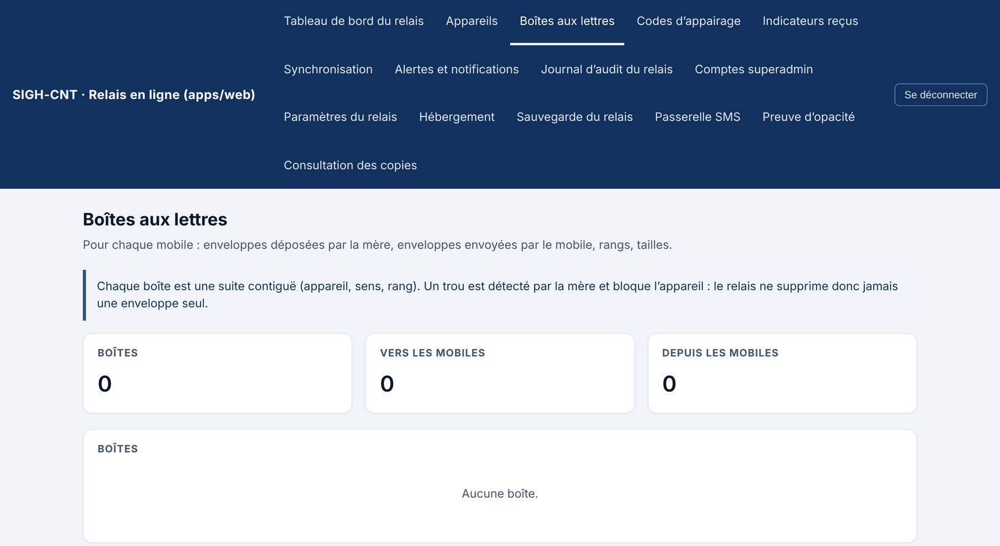
Boîtes aux lettres (copie locale) : les boîtes des téléphones appairés, sans aucun contenu.
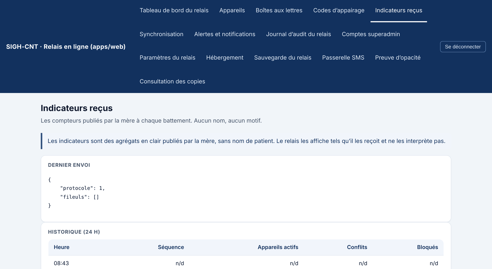
Indicateurs reçus (copie locale) : les agrégats que la mère publie, sans aucun nom.
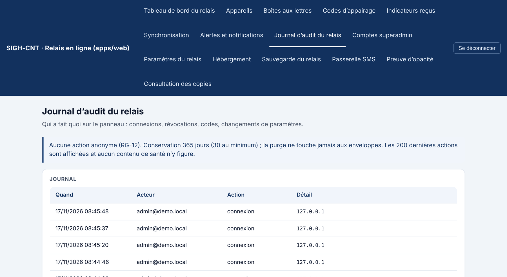
Journal d’audit du relais (copie locale).
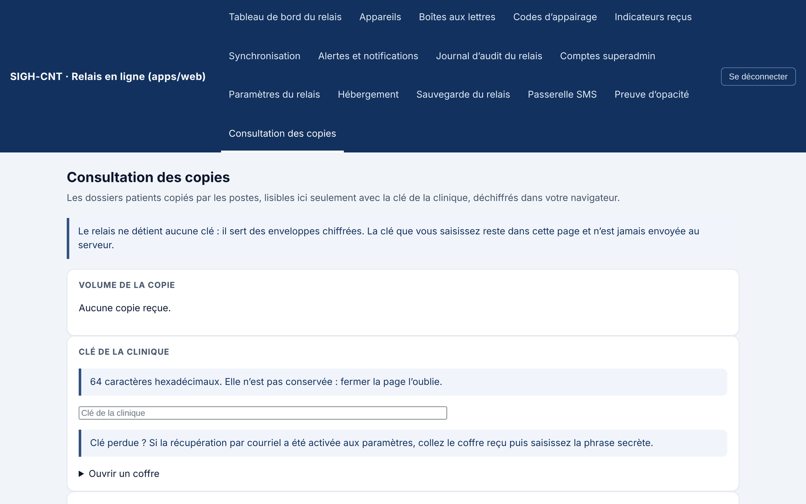
Consultation des copies (copie locale) : la clé de clinique se saisit dans la page et ne quitte pas le navigateur.
10.3 Les écrans du poste, par domaine et par module
Annexes
A. Ce qui n’est pas couvert ou pas vérifié
Sujet
État au 17/11/2026
Installateur Windows, poste sous Windows
Écrit, jamais compilé ni exécuté sur un vrai Windows. Les cinq cas de désinstallation sont à rejouer sur un vrai poste.
Protection de la clé du poste (DPAPI), chiffrement au repos
Éprouvés par des tests automatiques hors Windows. Aucun contrôle sous Windows : les trois contrôles de la section 5.6 sont à jouer. Le chiffrement de la base est SQLite3 Multiple Ciphers, pas SQLCipher.
Restauration de la clé du poste sur un poste neuf
La fonction existe et est testée ; aucun écran ne l’offre.
Relais sur l’hébergement cPanel réel
Non déployé. Espace disque, taille de requête et temps d’exécution à mesurer.
Deux postes physiques, vrai routeur, Android, charge
Non exercés ; la synchronisation est prouvée sur un seul ordinateur (processus réels).
Imprimante Xprinter XP-Q800
Non branchée ; impression par l’imprimante par défaut du système non essayée sur matériel ; liaison réelle (USB ou Ethernet) à constater.
Boîtier MECeF, e-MECeF
Aucun adaptateur : en attente des réponses du fournisseur et de la DGI. Aucun numéro n’est fabriqué comme s’il était fiscal.
Sauvegarde hors site par SFTP
Non faite.
Passerelle SMS
Aucun SMS réel envoyé. Comptes Twilio et Vonage jamais essayés ; couverture du Bénin, expéditeur alphanumérique, coût par message, codes d’erreur réels : à vérifier en recette sur site. Heures et modèles : aucun écran du poste ne les modifie encore. Activation désactivée par défaut.
Satisfaction en ligne
Jamais ouverte sur de vrais téléphones ; navigateurs récents exigés, aucun repli ; limites et définitions des taux à confirmer par la Direction.
Fiscalité
Taux de la retenue sur la facture d’un tiers (3 % et 5 %) et textes officiels non lus ; toutes les versions du barème de l’AIB sont « à valider » ; imputations de l’AIB non synchronisées entre postes et sans écriture comptable ; écriture d’une version du barème à vérifier au poste.
Régimes individuels, plan annuel
Les régimes individuels ne se synchronisent pas ; aucun écran d’édition des axes et états du plan annuel.
Rôles et noms écrits dans le code
Reste une liste blanche décroissante (section 8.1) ; les signataires de nombreux états imprimés nomment encore une personne (lot de reprise prévu).
Double facteur du panneau superadmin
Non pris en charge.
Captures
Maquette (écrans de configuration), application de poste en Flutter (écrans propres au poste), panneau du relais en local. Aucune capture n’a été prise sur un poste Windows réel.
B. Écarts à corriger repérés pendant la rédaction
Mot de passe superadmin : la commande relais:superadmin et l’écran Comptes superadmin exigent 8 caractères au moins ; le fichier lisez-moi de apps/web dit 12 (section 7.4). Le texte du lisez-moi est à corriger.
Exemple d’adresse : production.env.exemple (APP_URL) et l’aide du champ « Adresse du relais » du mode pair montrent encore https://relais.exemple.bj. Ce sont des exemples sans effet : saisissez sighcnt.nassieratoo.com.
Maquette et poste : l’écran Passerelle SMS de la maquette propose de saisir les identifiants du fournisseur ; le poste les lit au relais (section 4.5). Suivez le poste.
Manifeste et panneau : le manifeste de navigation ne déclare que douze entrées du panneau du relais ; le menu réel en a quinze (Synchronisation, Passerelle SMS, Consultation des copies n’y sont pas) (section 10.2).
Deux droits voisins pour la vue complète du centre des validations (voir_toutes_les_validations et voir_toutes_les_familles_validation) : à fusionner quand la Direction aura dit qui voit quoi.
C. Petit glossaire
Mère
Le poste de référence de la clinique, sur le réseau local. Une seule par clinique.
Fileul
Un poste rattaché à la mère.
Relais web
Le site sur l’hébergement cPanel qui transporte les enveloppes chiffrées.
Appairage
Le rattachement d’un poste ou d’un téléphone par un code à usage unique.
Clé de clinique
La clé qui chiffre tout ce qui quitte la clinique. Jamais au relais.
Secret de la mère
Le texte qui identifie la mère auprès du relais (RELAIS_SECRET_MERE).
Enveloppe
Un paquet d’opérations chiffré, déposé au relais.
Battement
Le signe de vie que la mère envoie au relais.
Geste réservé
Un acte qui engage un professionnel nommé, accordé par rôle (chapitre 8).
Passerelle SMS
Le service du relais qui envoie les SMS déposés par la mère (Twilio ou Vonage).
Identifiant opaque
L’empreinte (HMAC) qui désigne un message ou une réponse sans rien dire de la personne ; calculée avec la clé de clinique.
Heures calmes
La plage (21 h à 7 h proposée) pendant laquelle aucun SMS non urgent ne part.
Chiffrement au repos
Le chiffrement des fichiers et des bases du poste sur le disque, par la clé du poste (protégée par DPAPI sous Windows).
DPAPI
La protection de Windows qui lie un secret à la session de l’utilisateur.
Tiers payeur
L’entreprise, l’assureur ou la convention qui prend un patient en charge et reçoit une facture distincte de celle du patient.
Version datée
Une nouvelle valeur qui s’applique à partir d’une date, sans effacer l’ancienne.
MECeF
Le dispositif de certification des factures normalisées (boîtier physique retenu).
Fin du manuel administrateur. Sources : docs/guides/, docs/architecture/adr/ (ADR-0005 à 0009), apps/web, apps/poste/lib, packages/rbac/data/rbac.json, packages/referentiels/data/manifeste.json, prototype_html/, docs/decisions/DECISIONS-A-VALIDER.md. Les chapitres 8, 9 et 10 sont engendrés par des scripts depuis ces fichiers (docs/manuels/source-administrateur/).